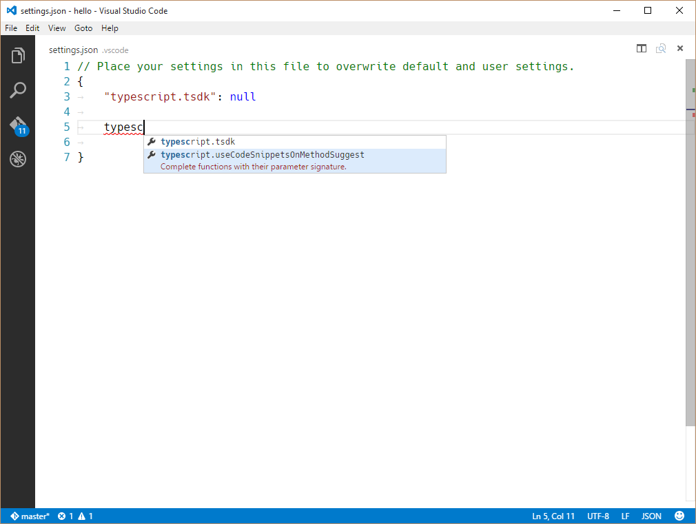
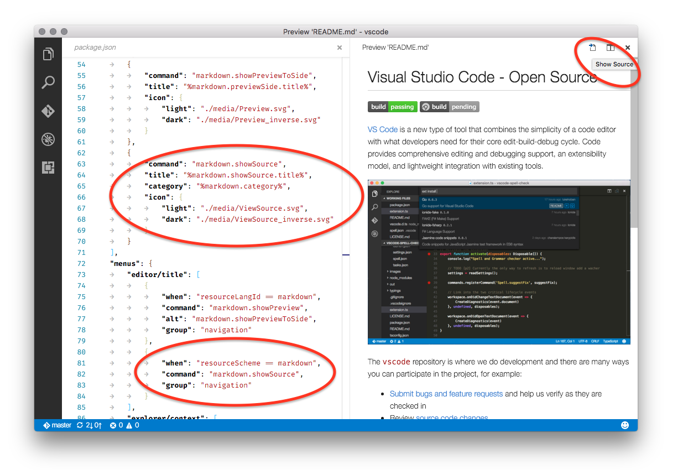
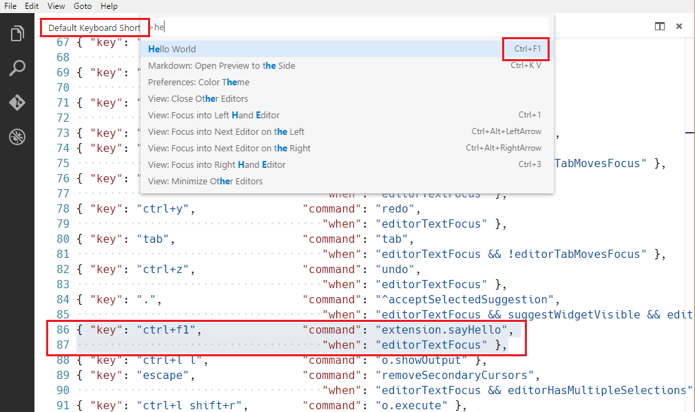
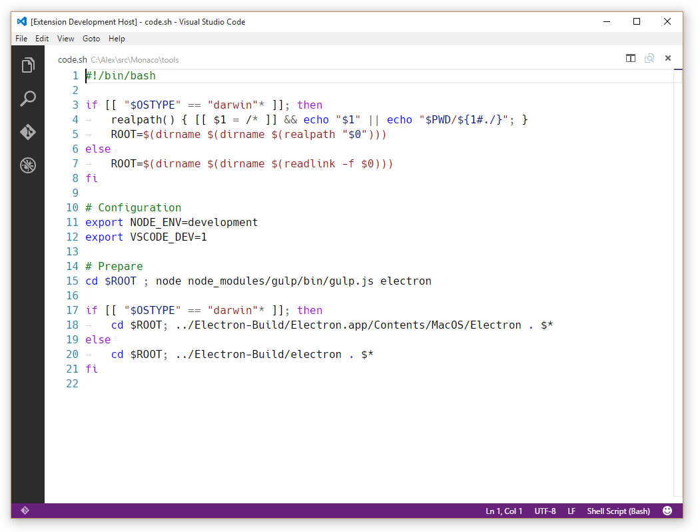
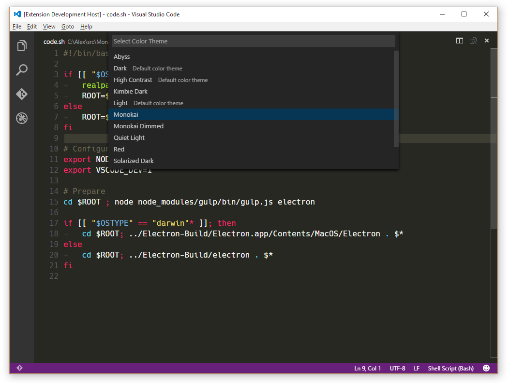

<!DOCTYPE HTML>
<html lang="zh-hans" >
    <head>
        <meta charset="UTF-8">
        <meta content="text/html; charset=utf-8" http-equiv="Content-Type">
        <title>扩展点 · vscode-docs</title>
        <meta http-equiv="X-UA-Compatible" content="IE=edge" />
        <meta name="description" content="">
        <meta name="generator" content="GitBook 3.2.3">
        <meta name="author" content="VSCodeContributorsinChina">
        
        
    
    <link rel="stylesheet" href="../../gitbook/style.css">

    
            
                
                <link rel="stylesheet" href="../../gitbook/gitbook-plugin-search-pro/search.css">
                
            
                
                <link rel="stylesheet" href="../../gitbook/gitbook-plugin-intopic-toc/style.css">
                
            
                
                <link rel="stylesheet" href="../../gitbook/gitbook-plugin-highlight/website.css">
                
            
                
                <link rel="stylesheet" href="../../gitbook/gitbook-plugin-fontsettings/website.css">
                
            
        

    

    
        
    
        
    
        
    
        
    
        
    
        
    

        
    
    
    <meta name="HandheldFriendly" content="true"/>
    <meta name="viewport" content="width=device-width, initial-scale=1, user-scalable=no">
    <meta name="apple-mobile-web-app-capable" content="yes">
    <meta name="apple-mobile-web-app-status-bar-style" content="black">
    <link rel="apple-touch-icon-precomposed" sizes="152x152" href="../../gitbook/images/apple-touch-icon-precomposed-152.png">
    <link rel="shortcut icon" href="../../gitbook/images/favicon.ico" type="image/x-icon">

    
    <link rel="next" href="激活事件.html" />
    
    
    <link rel="prev" href="扩展manifest文件.html" />
    

    </head>
    <body>
        
<div class="book">
    <div class="book-summary">
        
            
<div id="book-search-input" role="search">
    <input type="text" placeholder="输入并搜索" />
</div>

            
                <nav role="navigation">
                


<ul class="summary">
    
    

    

    
        
        
    
        <li class="chapter " data-level="1.1" data-path="../../">
            
                <a href="../../">
            
                    
                    简介
            
                </a>
            

            
        </li>
    
        <li class="chapter " data-level="1.2" >
            
                <a target="_blank" href="https://code.visualstudio.com/docs">
            
                    
                    官方文档
            
                </a>
            

            
        </li>
    
        <li class="chapter " data-level="1.3" data-path="../Overview.html">
            
                <a href="../Overview.html">
            
                    
                    概览
            
                </a>
            

            
        </li>
    
        <li class="chapter " data-level="1.4" data-path="../快速入门.md">
            
                <span>
            
                    
                    快速入门(暂无)
            
                </a>
            

            
            <ul class="articles">
                
    
        <li class="chapter " data-level="1.4.1" data-path="../快速入门/介绍视频.html">
            
                <a href="../快速入门/介绍视频.html">
            
                    
                    视频介绍
            
                </a>
            

            
        </li>
    
        <li class="chapter " data-level="1.4.2" data-path="../快速入门/小技巧.html">
            
                <a href="../快速入门/小技巧.html">
            
                    
                    小技巧
            
                </a>
            

            
        </li>
    
        <li class="chapter " data-level="1.4.3" data-path="../快速入门/用户接口.html">
            
                <a href="../快速入门/用户接口.html">
            
                    
                    用户接口
            
                </a>
            

            
        </li>
    
        <li class="chapter " data-level="1.4.4" data-path="../快速入门/主题.html">
            
                <a href="../快速入门/主题.html">
            
                    
                    主题
            
                </a>
            

            
        </li>
    
        <li class="chapter " data-level="1.4.5" data-path="../快速入门/设置.html">
            
                <a href="../快速入门/设置.html">
            
                    
                    设置
            
                </a>
            

            
        </li>
    
        <li class="chapter " data-level="1.4.6" data-path="../快速入门/快捷键绑定.html">
            
                <a href="../快速入门/快捷键绑定.html">
            
                    
                    快捷键绑定
            
                </a>
            

            
        </li>
    
        <li class="chapter " data-level="1.4.7" data-path="../快速入门/语言区域.html">
            
                <a href="../快速入门/语言区域.html">
            
                    
                    语言区域
            
                </a>
            

            
        </li>
    

            </ul>
            
        </li>
    
        <li class="chapter " data-level="1.5" data-path="../../summary/编辑器.html">
            
                <a href="../../summary/编辑器.html">
            
                    
                    编辑器
            
                </a>
            

            
            <ul class="articles">
                
    
        <li class="chapter " data-level="1.5.1" data-path="../编辑器/基础.html">
            
                <a href="../编辑器/基础.html">
            
                    
                    基础
            
                </a>
            

            
        </li>
    
        <li class="chapter " data-level="1.5.2" data-path="../编辑器/安装.html">
            
                <a href="../编辑器/安装.html">
            
                    
                    安装
            
                </a>
            

            
        </li>
    
        <li class="chapter " data-level="1.5.3" data-path="../编辑器/扩展市场.html">
            
                <a href="../编辑器/扩展市场.html">
            
                    
                    扩展市场
            
                </a>
            

            
        </li>
    
        <li class="chapter " data-level="1.5.4" data-path="../编辑器/任务.html">
            
                <a href="../编辑器/任务.html">
            
                    
                    任务
            
                </a>
            

            
        </li>
    
        <li class="chapter " data-level="1.5.5" data-path="../编辑器/调试.html">
            
                <a href="../编辑器/调试.html">
            
                    
                    调试
            
                </a>
            

            
        </li>
    
        <li class="chapter " data-level="1.5.6" data-path="../编辑器/为什么选用VSCode.html">
            
                <a href="../编辑器/为什么选用VSCode.html">
            
                    
                    为什么选用VSCode
            
                </a>
            

            
        </li>
    
        <li class="chapter " data-level="1.5.7" data-path="../编辑器/版本控制.html">
            
                <a href="../编辑器/版本控制.html">
            
                    
                    版本控制
            
                </a>
            

            
        </li>
    
        <li class="chapter " data-level="1.5.8" data-path="../编辑器/易用性.html">
            
                <a href="../编辑器/易用性.html">
            
                    
                    易用性
            
                </a>
            

            
        </li>
    
        <li class="chapter " data-level="1.5.9" data-path="../编辑器/与时俱进的编辑体验.html">
            
                <a href="../编辑器/与时俱进的编辑体验.html">
            
                    
                    与时俱进的编辑体验
            
                </a>
            

            
        </li>
    

            </ul>
            
        </li>
    
        <li class="chapter " data-level="1.6" data-path="../../summary/定制化.html">
            
                <a href="../../summary/定制化.html">
            
                    
                    定制化
            
                </a>
            

            
            <ul class="articles">
                
    
        <li class="chapter " data-level="1.6.1" data-path="../定制化/概述.html">
            
                <a href="../定制化/概述.html">
            
                    
                    概述
            
                </a>
            

            
        </li>
    
        <li class="chapter " data-level="1.6.2" data-path="../定制化/用户和工作空间.html">
            
                <a href="../定制化/用户和工作空间.html">
            
                    
                    用户和工作空间
            
                </a>
            

            
        </li>
    
        <li class="chapter " data-level="1.6.3" data-path="../定制化/快捷键绑定.html">
            
                <a href="../定制化/快捷键绑定.html">
            
                    
                    快捷键绑定
            
                </a>
            

            
        </li>
    
        <li class="chapter " data-level="1.6.4" data-path="../定制化/用户定义代码段.html">
            
                <a href="../定制化/用户定义代码段.html">
            
                    
                    用户定义代码段
            
                </a>
            

            
        </li>
    
        <li class="chapter " data-level="1.6.5" data-path="../定制化/调色板.html">
            
                <a href="../定制化/调色板.html">
            
                    
                    调色板
            
                </a>
            

            
        </li>
    
        <li class="chapter " data-level="1.6.6" data-path="../定制化/主题.html">
            
                <a href="../定制化/主题.html">
            
                    
                    主题
            
                </a>
            

            
        </li>
    
        <li class="chapter " data-level="1.6.7" data-path="../定制化/语言区域.html">
            
                <a href="../定制化/语言区域.html">
            
                    
                    语言区域
            
                </a>
            

            
        </li>
    

            </ul>
            
        </li>
    
        <li class="chapter " data-level="1.7" data-path="../../summary/工具.html">
            
                <a href="../../summary/工具.html">
            
                    
                    工具
            
                </a>
            

            
            <ul class="articles">
                
    
        <li class="chapter " data-level="1.7.1" data-path="../工具/vse命令行工具.html">
            
                <a href="../工具/vse命令行工具.html">
            
                    
                    vse命令行工具
            
                </a>
            

            
        </li>
    
        <li class="chapter " data-level="1.7.2" data-path="../工具/yocode扩展生成器.html">
            
                <a href="../工具/yocode扩展生成器.html">
            
                    
                    yocode扩展生成器
            
                </a>
            

            
        </li>
    
        <li class="chapter " data-level="1.7.3" data-path="../工具/范例.html">
            
                <a href="../工具/范例.html">
            
                    
                    范例
            
                </a>
            

            
        </li>
    

            </ul>
            
        </li>
    
        <li class="chapter " data-level="1.8" data-path="../../summary/技术支持.html">
            
                <a href="../../summary/技术支持.html">
            
                    
                    技术支持
            
                </a>
            

            
            <ul class="articles">
                
    
        <li class="chapter " data-level="1.8.1" data-path="../技术支持/常见问题.html">
            
                <a href="../技术支持/常见问题.html">
            
                    
                    常见问题
            
                </a>
            

            
        </li>
    
        <li class="chapter " data-level="1.8.2" data-path="../技术支持/错误代码.html">
            
                <a href="../技术支持/错误代码.html">
            
                    
                    错误代码
            
                </a>
            

            
        </li>
    
        <li class="chapter " data-level="1.8.3" data-path="../技术支持/如何升级.html">
            
                <a href="../技术支持/如何升级.html">
            
                    
                    如何升级
            
                </a>
            

            
        </li>
    
        <li class="chapter " data-level="1.8.4" data-path="../技术支持/系统要求.html">
            
                <a href="../技术支持/系统要求.html">
            
                    
                    系统要求
            
                </a>
            

            
        </li>
    

            </ul>
            
        </li>
    
        <li class="chapter " data-level="1.9" data-path="../../summary/扩展.html">
            
                <a href="../../summary/扩展.html">
            
                    
                    扩展
            
                </a>
            

            
            <ul class="articles">
                
    
        <li class="chapter " data-level="1.9.1" data-path="../扩展/概述.html">
            
                <a href="../扩展/概述.html">
            
                    
                    概述
            
                </a>
            

            
        </li>
    
        <li class="chapter " data-level="1.9.2" data-path="../扩展/范例-hello-world.html">
            
                <a href="../扩展/范例-hello-world.html">
            
                    
                    范例-hello-world
            
                </a>
            

            
        </li>
    
        <li class="chapter " data-level="1.9.3" data-path="../扩展/范例-word-count.html">
            
                <a href="../扩展/范例-word-count.html">
            
                    
                    范例-word-count
            
                </a>
            

            
        </li>
    
        <li class="chapter " data-level="1.9.4" data-path="../扩展/范例-language-server.html">
            
                <a href="../扩展/范例-language-server.html">
            
                    
                    范例-language-server
            
                </a>
            

            
        </li>
    
        <li class="chapter " data-level="1.9.5" data-path="../扩展/范例-调试器.html">
            
                <a href="../扩展/范例-调试器.html">
            
                    
                    范例-调试器
            
                </a>
            

            
        </li>
    
        <li class="chapter " data-level="1.9.6" data-path="../扩展/调试-扩展.html">
            
                <a href="../扩展/调试-扩展.html">
            
                    
                    调试-扩展
            
                </a>
            

            
        </li>
    
        <li class="chapter " data-level="1.9.7" data-path="../扩展/安装-扩展.html">
            
                <a href="../扩展/安装-扩展.html">
            
                    
                    安装-扩展
            
                </a>
            

            
        </li>
    
        <li class="chapter " data-level="1.9.8" data-path="../扩展/范式-原则.html">
            
                <a href="../扩展/范式-原则.html">
            
                    
                    范式-原则
            
                </a>
            

            
        </li>
    
        <li class="chapter " data-level="1.9.9" data-path="../扩展/测试-扩展.html">
            
                <a href="../扩展/测试-扩展.html">
            
                    
                    测试-扩展
            
                </a>
            

            
        </li>
    
        <li class="chapter " data-level="1.9.10" data-path="../扩展/用我们的方法创造扩展.html">
            
                <a href="../扩展/用我们的方法创造扩展.html">
            
                    
                    用我们的方法创造扩展
            
                </a>
            

            
        </li>
    

            </ul>
            
        </li>
    
        <li class="chapter " data-level="1.10" data-path="../../summary/扩展API.html">
            
                <a href="../../summary/扩展API.html">
            
                    
                    扩展API
            
                </a>
            

            
            <ul class="articles">
                
    
        <li class="chapter " data-level="1.10.1" data-path="概述.html">
            
                <a href="概述.html">
            
                    
                    概述
            
                </a>
            

            
        </li>
    
        <li class="chapter " data-level="1.10.2" data-path="扩展manifest文件.html">
            
                <a href="扩展manifest文件.html">
            
                    
                    扩展manifest文件
            
                </a>
            

            
        </li>
    
        <li class="chapter active" data-level="1.10.3" data-path="扩展点.html">
            
                <a href="扩展点.html">
            
                    
                    扩展点
            
                </a>
            

            
        </li>
    
        <li class="chapter " data-level="1.10.4" data-path="激活事件.html">
            
                <a href="激活事件.html">
            
                    
                    激活事件
            
                </a>
            

            
        </li>
    
        <li class="chapter " data-level="1.10.5" data-path="vscode-api.html">
            
                <a href="vscode-api.html">
            
                    
                    vscode-api
            
                </a>
            

            
        </li>
    
        <li class="chapter " data-level="1.10.6" data-path="vscode-api-命令.html">
            
                <a href="vscode-api-命令.html">
            
                    
                    vscode-api-命令
            
                </a>
            

            
        </li>
    
        <li class="chapter " data-level="1.10.7" data-path="api调试.html">
            
                <a href="api调试.html">
            
                    
                    api调试
            
                </a>
            

            
        </li>
    

            </ul>
            
        </li>
    
        <li class="chapter " data-level="1.11" data-path="../../summary/语言.html">
            
                <a href="../../summary/语言.html">
            
                    
                    语言
            
                </a>
            

            
            <ul class="articles">
                
    
        <li class="chapter " data-level="1.11.1" data-path="../语言/概述.html">
            
                <a href="../语言/概述.html">
            
                    
                    概述
            
                </a>
            

            
        </li>
    
        <li class="chapter " data-level="1.11.2" data-path="../语言/javascript.html">
            
                <a href="../语言/javascript.html">
            
                    
                    Javascript
            
                </a>
            

            
        </li>
    
        <li class="chapter " data-level="1.11.3" data-path="../语言/json.html">
            
                <a href="../语言/json.html">
            
                    
                    JSON
            
                </a>
            

            
        </li>
    
        <li class="chapter " data-level="1.11.4" data-path="../语言/html.html">
            
                <a href="../语言/html.html">
            
                    
                    HTML(暂无)
            
                </a>
            

            
        </li>
    
        <li class="chapter " data-level="1.11.5" data-path="../语言/css.html">
            
                <a href="../语言/css.html">
            
                    
                    CSS, Sass and Less
            
                </a>
            

            
        </li>
    
        <li class="chapter " data-level="1.11.6" data-path="../语言/typescript.html">
            
                <a href="../语言/typescript.html">
            
                    
                    TypeScript
            
                </a>
            

            
        </li>
    
        <li class="chapter " data-level="1.11.7" data-path="../语言/markdown.html">
            
                <a href="../语言/markdown.html">
            
                    
                    Markdown
            
                </a>
            

            
        </li>
    
        <li class="chapter " data-level="1.11.8" data-path="../语言/cpp.html">
            
                <a href="../语言/cpp.html">
            
                    
                    C++
            
                </a>
            

            
        </li>
    
        <li class="chapter " data-level="1.11.9" data-path="../语言/java.md">
            
                <span>
            
                    
                    Java(暂无)
            
                </a>
            

            
        </li>
    
        <li class="chapter " data-level="1.11.10" data-path="../语言/php.html">
            
                <a href="../语言/php.html">
            
                    
                    PHP
            
                </a>
            

            
        </li>
    
        <li class="chapter " data-level="1.11.11" data-path="../语言/python.html">
            
                <a href="../语言/python.html">
            
                    
                    Python
            
                </a>
            

            
        </li>
    
        <li class="chapter " data-level="1.11.12" data-path="../语言/go.md">
            
                <span>
            
                    
                    Go(暂无)
            
                </a>
            

            
        </li>
    
        <li class="chapter " data-level="1.11.13" data-path="../语言/dockerfile.html">
            
                <a href="../语言/dockerfile.html">
            
                    
                    Dockerfile
            
                </a>
            

            
        </li>
    
        <li class="chapter " data-level="1.11.14" data-path="../语言/t-sql.md">
            
                <span>
            
                    
                    T-SQL(暂无)
            
                </a>
            

            
        </li>
    
        <li class="chapter " data-level="1.11.15" data-path="../语言/csharp.html">
            
                <a href="../语言/csharp.html">
            
                    
                    C#
            
                </a>
            

            
        </li>
    

            </ul>
            
        </li>
    
        <li class="chapter " data-level="1.12" data-path="../../summary/运行时.html">
            
                <a href="../../summary/运行时.html">
            
                    
                    运行时
            
                </a>
            

            
            <ul class="articles">
                
    
        <li class="chapter " data-level="1.12.1" data-path="../运行时/nodejs.html">
            
                <a href="../运行时/nodejs.html">
            
                    
                    nodejs
            
                </a>
            

            
        </li>
    
        <li class="chapter " data-level="1.12.2" data-path="../运行时/ASPnet5.html">
            
                <a href="../运行时/ASPnet5.html">
            
                    
                    ASPnet5
            
                </a>
            

            
        </li>
    
        <li class="chapter " data-level="1.12.3" data-path="../运行时/unity.html">
            
                <a href="../运行时/unity.html">
            
                    
                    unity
            
                </a>
            

            
        </li>
    
        <li class="chapter " data-level="1.12.4" data-path="../运行时/office.html">
            
                <a href="../运行时/office.html">
            
                    
                    office
            
                </a>
            

            
        </li>
    

            </ul>
            
        </li>
    

    

    <li class="divider"></li>

    <li>
        <a href="https://www.gitbook.com" target="blank" class="gitbook-link">
            本书使用 GitBook 发布
        </a>
    </li>
</ul>


                </nav>
            
        
    </div>

    <div class="book-body">
        
            <div class="body-inner">
                
                    

<div class="book-header" role="navigation">
    

    <!-- Title -->
    <h1>
        <i class="fa fa-circle-o-notch fa-spin"></i>
        <a href="../.." >扩展点</a>
    </h1>
</div>


                    <div class="page-wrapper" tabindex="-1" role="main">
                        <div class="page-inner">
                            
<div id="book-search-results">
    <div class="search-noresults">
    
                                <section class="normal markdown-section">
                                
                                <h1 id="contribution-points---packagejson">Contribution Points - package.json</h1>
<p>This document covers the various contribution points that are defined in the <a href="&#x6269;&#x5C55;manifest&#x6587;&#x4EF6;.html"><code>package.json</code> extension manifest</a>.</p>
<p>&#x8FD9;&#x7BC7;&#x6587;&#x6863;&#x5305;&#x542B;&#x4E86;<a href="&#x6269;&#x5C55;manifest&#x6587;&#x4EF6;.html"><code>package.json</code> extension manifest</a>&#x4E2D; <code>contribution</code> &#x9009;&#x9879;&#x7684;&#x6240;&#x6709;&#x53EF;&#x7528;&#x5B57;&#x6BB5;&#x3002;</p>
<ul>
<li><a href="../../docs/extensionAPI/extension-points.md#contributesconfiguration"><code>configuration</code></a></li>
<li><a href="../../docs/extensionAPI/extension-points.md#contributescommands"><code>commands</code></a></li>
<li><a href="../../docs/extensionAPI/extension-points.md#contributeskeybindings"><code>keybindings</code></a></li>
<li><a href="../../docs/extensionAPI/extension-points.md#contributeslanguages"><code>languages</code></a></li>
<li><a href="../../docs/extensionAPI/extension-points.md#contributesdebuggers"><code>debuggers</code></a></li>
<li><a href="../../docs/extensionAPI/extension-points.md#contributesgrammars"><code>grammars</code></a></li>
<li><a href="../../docs/extensionAPI/extension-points.md#contributesthemes"><code>themes</code></a></li>
<li><a href="../../docs/extensionAPI/extension-points.md#contributessnippets"><code>snippets</code></a></li>
<li><a href="../../docs/extensionAPI/extension-points.md#contributesjsonvalidation"><code>jsonValidation</code></a></li>
</ul>
<h2 id="contributesconfiguration"><code>contributes.configuration</code></h2>
<p>Contribute configuration keys that will be exposed to the user. The user will be able to set these configuration options either from User Settings or from the Workspace Settings.</p>
<p>When contributing configuration keys, a JSON schema describing these keys is actually contributed. This ensures the user gets great tooling support when authoring VS Code settings files.</p>
<p>You can read these values from your extension using <code>vscode.workspace.getConfiguration(&apos;myExtension&apos;)</code>.</p>
<p><code>contributes.configuration</code> &#x9009;&#x9879;&#x4F1A;&#x88AB;&#x66B4;&#x9732;&#x7ED9;&#x7528;&#x6237;&#x3002;&#x7528;&#x6237;&#x80FD;&#x591F;&#x5728;&#x201C;&#x7528;&#x6237;&#x8BBE;&#x7F6E;&#x201D;&#x6216;&#x201C;&#x5DE5;&#x4F5C;&#x533A;&#x8BBE;&#x7F6E;&#x201D;&#x9762;&#x677F;&#x4E2D;&#x8BBE;&#x7F6E;&#x8FD9;&#x4E9B;&#x914D;&#x7F6E;&#x9009;&#x9879;&#x3002;</p>
<p>&#x5728;&#x914D;&#x7F6E; <code>contributes.configuration</code> &#xFF0C;&#x540C;&#x65F6;&#x4E5F;&#x914D;&#x7F6E;&#x4E86;&#x8FD9;&#x4E9B;&#x9009;&#x9879;&#x7684;&#x4E00;&#x79CD;JSON&#x6A21;&#x5F0F;&#x7684;&#x63CF;&#x8FF0;&#x3002;&#x7740;&#x786E;&#x4FDD;&#x4E86;&#x7528;&#x6237;&#x5728;&#x8BBE;&#x7F6E;VS Code &#x9009;&#x9879;&#x6587;&#x4EF6;&#x65F6;&#x80FD;&#x591F;&#x6216;&#x8005;&#x66F4;&#x597D;&#x7684;&#x5DE5;&#x5177;&#x652F;&#x6301;&#x3002;</p>
<p><strong>&#x8BD1;&#x8005;&#x6CE8;&#xFF1A;</strong>&#x5728;&#x914D;&#x7F6E; <code>contributes.configuration</code> &#x65F6;&#xFF0C;&#x5B9E;&#x9645;&#x4E0A;&#x662F;&#x914D;&#x7F6E;&#x4E86;&#x67D0;&#x4E2A;&#x9009;&#x9879;&#x7684;&#x8BF8;&#x5982;&#x7C7B;&#x578B;/&#x9ED8;&#x8BA4;&#x503C;&#xFF0F;&#x4ECB;&#x7ECD;&#x7B49;&#x9009;&#x9879;&#xFF0C;&#x8FD9;&#x6837;&#x7528;&#x6237;&#x5728;&#x914D;&#x7F6E; setting &#x6587;&#x4EF6;&#x65F6;VS Code&#x80FD;&#x591F;&#x6839;&#x636E;&#x8FD9;&#x4E9B;&#x914D;&#x7F6E;&#x6765;&#x63D0;&#x793A;&#x7528;&#x6237;&#x3002;</p>
<h3 id="&#x4F8B;&#x5B50;">&#x4F8B;&#x5B50;</h3>
<pre><code class="lang-json"><span class="hljs-comment">// package.json</span>
...
<span class="hljs-string">&quot;contributes&quot;</span>: {
    <span class="hljs-string">&quot;configuration&quot;</span>: {
        <span class="hljs-string">&quot;type&quot;</span>: <span class="hljs-string">&quot;object&quot;</span>,
        <span class="hljs-string">&quot;title&quot;</span>: <span class="hljs-string">&quot;TypeScript configuration&quot;</span>,
        <span class="hljs-string">&quot;properties&quot;</span>: {
            <span class="hljs-string">&quot;typescript.useCodeSnippetsOnMethodSuggest&quot;</span>: {
                <span class="hljs-string">&quot;type&quot;</span>: <span class="hljs-string">&quot;boolean&quot;</span>,
                <span class="hljs-string">&quot;default&quot;</span>: <span class="hljs-literal">false</span>,
                <span class="hljs-string">&quot;description&quot;</span>: <span class="hljs-string">&quot;Complete functions with their parameter signature.&quot;</span>
            },
            <span class="hljs-string">&quot;typescript.tsdk&quot;</span>: {
                <span class="hljs-string">&quot;type&quot;</span>: [<span class="hljs-string">&quot;string&quot;</span>, <span class="hljs-string">&quot;null&quot;</span>],
                <span class="hljs-string">&quot;default&quot;</span>: <span class="hljs-literal">null</span>,
                <span class="hljs-string">&quot;description&quot;</span>: <span class="hljs-string">&quot;Specifies the folder path containing the tsserver and lib*.d.ts files to use.&quot;</span>
            }
        }
    }
}
</code></pre>
<p></p>
<h2 id="contributesconfigurationdefaults"><code>contributes.configurationDefaults</code></h2>
<p>Contribute default language specific editor configurations. This will override default editor configurations for the provided language.</p>
<p>The following example contributes default editor configurations for the <code>markdown</code> language:</p>
<p>&#x8BBE;&#x7F6E;&#x9ED8;&#x8BA4;&#x8BED;&#x8A00;&#x7279;&#x5B9A;&#x7684;&#x7F16;&#x8F91;&#x5668;&#x914D;&#x7F6E;&#x3002;&#x8FD9;&#x5C06;&#x8986;&#x76D6;&#x6240;&#x63D0;&#x4F9B;&#x8BED;&#x8A00;&#x7684;&#x9ED8;&#x8BA4;&#x7F16;&#x8F91;&#x5668;&#x914D;&#x7F6E;&#x3002;
&#x4E0B;&#x9762;&#x7684;&#x4F8B;&#x5B50;&#x914D;&#x7F6E;&#x4E86; <code>markdown</code> &#x8BED;&#x8A00;&#x7684;&#x9ED8;&#x8BA4;&#x7F16;&#x8F91;&#x5668;&#x914D;&#x7F6E;</p>
<h3 id="&#x4F8B;&#x5B50;">&#x4F8B;&#x5B50;</h3>
<pre><code class="lang-json"><span class="hljs-comment">// package.json</span>
<span class="hljs-string">&quot;contributes&quot;</span>: {
    <span class="hljs-string">&quot;configurationDefaults&quot;</span>: {
        <span class="hljs-string">&quot;[markdown]&quot;</span>: {
            <span class="hljs-string">&quot;editor.wordWrap&quot;</span>: <span class="hljs-string">&quot;on&quot;</span>,
            <span class="hljs-string">&quot;editor.quickSuggestions&quot;</span>: <span class="hljs-literal">false</span>
        }
    }
}
</code></pre>
<h2 id="contributescommands"><code>contributes.commands</code></h2>
<p>Contribute an entry consisting of a title and a command to invoke to the Command Palette (&#x21E7;&#x2318;P). You can also optionally define a <code>category</code> string which will prefix the command title and allow easy grouping within the Command Palette drop-down.</p>
<p>&#x63D0;&#x4F9B;&#x4E86;&#x4E00;&#x4E2A;&#x7531; commands &#x548C; title &#x5B57;&#x6BB5;&#x7EC4;&#x6210;&#x7684;&#x6761;&#x76EE;&#xFF0C;&#x7528;&#x4E8E;&#x5728; <strong>&#x547D;&#x4EE4;&#x9762;&#x677F;</strong>(&#x21E7;&#x2318;P) &#x4E2D;&#x8C03;&#x7528;&#x3002;&#x4F60;&#x540C;&#x65F6;&#x8036;&#x53EF;&#x4EE5;&#x9009;&#x62E9;&#x6DFB;&#x52A0;&#x4E00;&#x4E2A; <code>category</code> &#x5B57;&#x7B26;&#x4E32;&#xFF0C;&#x6B64;&#x5B57;&#x7B26;&#x4E32;&#x4F1A;&#x7528;&#x4F5C;&#x547D;&#x4EE4;&#x7684;&#x524D;&#x7F00;&#xFF0C;&#x540C;&#x65F6;&#x5728;&#x547D;&#x4EE4;&#x9762;&#x677F;&#x5C55;&#x5F00;&#x7684;&#x65F6;&#x5019;&#x65B9;&#x4FBF;&#x8FDB;&#x884C;&#x547D;&#x4EE4;&#x7684;&#x5206;&#x7EC4;&#x3002;</p>
<blockquote>
<p><strong>Note:</strong> When a command is invoked (from a key binding or from the <strong>Command Palette</strong>), VS Code will emit an activationEvent <code>onCommand:${command}</code>.</p>
<p><strong>Note:</strong> &#x5F53;&#x4E00;&#x4E2A;&#x547D;&#x4EE4;&#x88AB;&#x8C03;&#x7528;&#x7684;&#x65F6;&#x5019;&#xFF08;&#x65E0;&#x8BBA;&#x662F;&#x901A;&#x8FC7;&#x6309;&#x952E;&#x7ED1;&#x5B9A;&#x8FD8;&#x662F; <strong>&#x547D;&#x4EE4;&#x9762;&#x677F;</strong>&#xFF09;&#xFF0C;VS Code &#x5C06;&#x89E6;&#x53D1;&#x4E00;&#x4E2A; activationEvent <code>onCommand:${command}</code>&#x3002;</p>
</blockquote>
<h3 id="example">Example</h3>
<pre><code class="lang-json">...
<span class="hljs-string">&quot;contributes&quot;</span>: {
    <span class="hljs-string">&quot;commands&quot;</span>: [{
        <span class="hljs-string">&quot;command&quot;</span>: <span class="hljs-string">&quot;extension.sayHello&quot;</span>,
        <span class="hljs-string">&quot;title&quot;</span>: <span class="hljs-string">&quot;Hello World&quot;</span>
    }]
}
...
</code></pre>
<p></p>
<h2 id="contributesmenus"><code>contributes.menus</code></h2>
<p>Contribute a menu item for a command to the editor or Explorer. The menu item definition contains the command that should be invoked when selected and the condition under which the item should show. The latter is defined with the <code>when</code> clause which uses the key bindings <a href="https://code.visualstudio.com/docs/getstarted/keybindings#_when-clause-contexts" target="_blank">when clause contexts</a>. In addition to the mandatory <code>command</code> property, an alternative command can be defined using the <code>alt</code>-property. It will be shown and invoked when pressing Alt while hovering over a menu item. Last, a <code>group</code>-property defines sorting and grouping of menu items. The <code>navigation</code> group is special as it will always be sorted to the top/beginning of a menu.</p>
<p>&#x5B9A;&#x4E49;&#x4E86;&#x7F16;&#x8F91;&#x5668;&#x6216;&#x8005;&#x8D44;&#x6E90;&#x7BA1;&#x7406;&#x5668;&#x4E2D;&#x4E00;&#x4E2A;&#x547D;&#x4EE4;&#x5728;&#x7684;&#x83DC;&#x5355;&#x9879;&#x3002;&#x83DC;&#x5355;&#x9879;&#x5B9A;&#x4E49;&#x4E86;&#x9009;&#x62E9;&#x65F6;&#x5E94;&#x8BE5;&#x8C03;&#x7528;&#x7684;&#x547D;&#x4EE4;&#x4EE5;&#x53CA;&#x4E0D;&#x540C;&#x60C5;&#x51B5;&#x4E0B;&#x547D;&#x4EE4;&#x7684;&#x7684;&#x663E;&#x793A;&#x65B9;&#x5F0F;&#x3002;&#x540E;&#x8005;&#x4F7F;&#x7528; <code>when</code> &#x5B50;&#x53E5;&#xFF0C;&#x5E76;&#x7ED3;&#x5408; <a href="https://code.visualstudio.com/docs/getstarted/keybindings#_when-clause-contexts" target="_blank">&#x5B50;&#x53E5;&#x4E0A;&#x4E0B;&#x6587;</a> &#x901A;&#x8FC7;&#x6309;&#x952E;&#x7ED1;&#x5B9A;&#x6765;&#x5B9A;&#x4E49;&#x7684;&#x3002; &#x9664;&#x4E86;&#x5FC5;&#x8981;&#x7684; command &#x5C5E;&#x6027;&#xFF0C;&#x6211;&#x4EEC;&#x8FD8;&#x53EF;&#x4EE5;&#x4F7F;&#x7528; <code>alt</code> &#x6765;&#x66FF;&#x6362;&#x3002;&#x5F53;&#x9F20;&#x6807;&#x60AC;&#x6D6E;&#x5728;&#x83DC;&#x5355;&#x9879;&#x4E0A;&#x65F6;&#xFF0C;&#x6309;&#x4F4F; Alt &#x53EF;&#x4EE5;&#x663E;&#x793A;&#x548C;&#x8C03;&#x7528;&#x3002;&#x6700;&#x540E;&#xFF0C;<code>group</code> &#x5C5E;&#x6027;&#x5B9A;&#x4E49;&#x4E86;&#x83DC;&#x5355;&#x9879;&#x7684;&#x5206;&#x7EC4;&#x4E0E;&#x6392;&#x5E8F;&#x3002; <code>navigation</code> &#x7EC4;&#x6BD4;&#x8F83;&#x7279;&#x6B8A;&#xFF0C;&#x56E0;&#x4E3A;&#x5B83;&#x4F1A;&#x4E00;&#x76F4;&#x6392;&#x5728;&#x6700;&#x9876;&#x90E8;&#x6216;&#x8005;&#x6700;&#x5F00;&#x59CB;&#x7684;&#x4F4D;&#x7F6E;&#x3002;</p>
<p>Currently extension writers can contribute to:</p>
<p>&#x76EE;&#x524D;&#x62D3;&#x5C55;&#x7684;&#x5F00;&#x53D1;&#x8005;&#x80FD;&#x591F;&#x4FEE;&#x6539;&#x8FD9;&#x4E9B;&#x90E8;&#x5206;&#xFF1A;</p>
<ul>
<li>&#x5168;&#x5C40;&#x7684;&#x547D;&#x4EE4;&#x9762;&#x677F; - <code>commandPalette</code></li>
<li>&#x8D44;&#x6E90;&#x7BA1;&#x7406;&#x5668;&#x73AF;&#x5883;&#x83DC;&#x5355; - <code>explorer/context</code></li>
<li>&#x7F16;&#x8F91;&#x5668;&#x73AF;&#x5883;&#x83DC;&#x5355; - <code>editor/context</code></li>
<li>&#x7F16;&#x8F91;&#x5668;&#x7684;&#x6807;&#x9898;&#x83DC;&#x5355;&#x680F; - <code>editor/title</code></li>
<li>&#x7F16;&#x8F91;&#x5668;&#x6807;&#x9898;&#x7684;&#x4E0A;&#x4E0B;&#x6587;&#x83DC;&#x5355; - <code>editor/title/context</code></li>
<li>&#x8C03;&#x8BD5;&#x8C03;&#x7528;&#x5806;&#x6808;&#x7684;&#x4E0A;&#x4E0B;&#x6587;&#x83DC;&#x5355; - <code>debug/callstack/context</code></li>
<li><a href="https://code.visualstudio.com/docs/extensionAPI/api-scm#_menus" target="_blank">SCM &#x6807;&#x9898;&#x83DC;&#x5355;</a> - <code>scm/title</code></li>
<li><a href="https://code.visualstudio.com/docs/extensionAPI/extension-points#_contributessnippets" target="_blank">SCM &#x8D44;&#x6E90;&#x7EC4;&#x83DC;&#x5355;</a> - <code>scm/resourceGroup/context</code></li>
<li><a href="https://code.visualstudio.com/docs/extensionAPI/api-scm#_menus" target="_blank">SCM &#x8D44;&#x6E90;&#x83DC;&#x5355;</a> - <code>scm/resource/context</code></li>
<li><a href="https://code.visualstudio.com/docs/extensionAPI/api-scm#_menus" target="_blank">SCM &#x4FEE;&#x6539;&#x6807;&#x9898;&#x65F6;&#x7684;&#x83DC;&#x5355;</a> - <code>scm/change/title</code></li>
<li><a href="https://code.visualstudio.com/docs/extensionAPI/extension-points#_contributesviews" target="_blank">View &#x9762;&#x677F;&#x6807;&#x9898;&#x83DC;&#x5355;</a> - <code>view/title</code></li>
<li><a href="https://code.visualstudio.com/docs/extensionAPI/extension-points#_contributesviews" target="_blank">View &#x9762;&#x677F;&#x4E2D;&#x9879;&#x76EE;&#x7684;&#x83DC;&#x5355;</a> - <code>view/item/context</code></li>
</ul>
<blockquote>
<p><strong>Note:</strong> When a command is invoked from a (context) menu, VS Code tries to infer the currently selected resource and passes that as a parameter when invoking the command. For instance, a menu item inside the Explorer is passed the URI of the selected resource and a menu item inside an editor is passed the URI of the document.</p>
<p><strong>Note:</strong> &#x5F53;&#x4E00;&#x4E2A;&#x547D;&#x4EE4;&#x901A;&#x8FC7; &#xFF08;&#x4E0A;&#x4E0B;&#x6587;&#xFF09;&#x83DC;&#x5355;&#x8C03;&#x7528;&#x65F6;&#xFF0C;VS Code &#x4F1A;&#x5C1D;&#x8BD5;&#x63A8;&#x65AD;&#x51FA;&#x5F53;&#x524D;&#x9009;&#x5B9A;&#x7684;&#x8D44;&#x6E90;&#xFF0C;&#x5E76;&#x4EE5;&#x53C2;&#x6570;&#x7684;&#x5F62;&#x5F0F;&#x4F20;&#x9012;&#x7ED9;&#x88AB;&#x8C03;&#x7528;&#x7684;&#x547D;&#x4EE4;</p>
</blockquote>
<p>In addition to a title, commands can also define icons which VS Code will show in the editor title menu bar.</p>
<p>&#x9664;&#x4E86;&#x6807;&#x9898;&#x4E4B;&#x5916;&#xFF0C;&#x547D;&#x4EE4;&#x8FD8;&#x53EF;&#x4EE5;&#x5B9A;&#x4E49; VS Code&#x5728;&#x7F16;&#x8F91;&#x5668;&#x6807;&#x9898;&#x83DC;&#x5355;&#x680F;&#x4E2D;&#x4F7F;&#x7528;&#x7684;&#x7684;&#x56FE;&#x6807;&#x3002;</p>
<h3 id="&#x4F8B;&#x5B50;">&#x4F8B;&#x5B50;</h3>
<pre><code class="lang-json"><span class="hljs-string">&quot;contributes&quot;</span>: {
    <span class="hljs-string">&quot;menus&quot;</span>: {
        <span class="hljs-string">&quot;editor/title&quot;</span>: [{
            <span class="hljs-string">&quot;when&quot;</span>: <span class="hljs-string">&quot;resourceLangId == markdown&quot;</span>,
            <span class="hljs-string">&quot;command&quot;</span>: <span class="hljs-string">&quot;markdown.showPreview&quot;</span>,
            <span class="hljs-string">&quot;alt&quot;</span>: <span class="hljs-string">&quot;markdown.showPreviewToSide&quot;</span>,
            <span class="hljs-string">&quot;group&quot;</span>: <span class="hljs-string">&quot;navigation&quot;</span>
        }]
    }
}
</code></pre>
<p></p>
<h3 id="context-specific-visibility-of-command-palette-menu-items---&#x547D;&#x4EE4;&#x9762;&#x677F;&#x4E2D;&#x7684;&#x547D;&#x4EE4;&#x53EF;&#x89C1;&#x6027;">Context specific visibility of Command Palette menu items - &#x547D;&#x4EE4;&#x9762;&#x677F;&#x4E2D;&#x7684;&#x547D;&#x4EE4;&#x53EF;&#x89C1;&#x6027;</h3>
<p>When registering commands in package.json, they will automatically be shown in the Command Palette (&#x21E7;&#x2318;P). To allow more control over command visibility, there is the commandPalette menu item. It allows you to define a when condition to control if a command should be visible in the Command Palette or not.</p>
<p>&#x5F53;&#x6211;&#x4EEC;&#x5728; <code>package.json</code> &#x4E2D;&#x5B9A;&#x4E49;&#x547D;&#x4EE4;&#x7684;&#x65F6;&#x5019;&#xFF0C;&#x5B83;&#x4EEC;&#x5C31;&#x4F1A;&#x81EA;&#x52A8;&#x663E;&#x793A;&#x5728;&#x547D;&#x4EE4;&#x9762;&#x677F;&#x4E2D;(<code>&#x21E7;&#x2318;P</code>)&#xFF0C;&#x4E3A;&#x4E86;&#x66F4;&#x597D;&#x5730;&#x63A7;&#x5236;&#x547D;&#x4EE4;&#x7684;&#x53EF;&#x89C1;&#x6027;&#xFF0C;&#x8FD9;&#x91CC;&#x6709;&#x4E00;&#x4E2A; <code>commandPalette</code> &#x7684;&#x83DC;&#x5355;&#x9009;&#x9879;&#x3002;&#x5B83;&#x5141;&#x8BB8;&#x4F60;&#x5B9A;&#x4E49;&#x4E00;&#x4E2A; <code>when</code> &#x6761;&#x4EF6;&#x6765;&#x63A7;&#x5236;&#x547D;&#x4EE4;&#x662F;&#x5426;&#x5E94;&#x8BE5;&#x5728; <strong>&#x547D;&#x4EE4;&#x9762;&#x677F;</strong> &#x4E2D;&#x663E;&#x793A;&#x3002;</p>
<p>The snippet below makes the &apos;Hello World&apos; command only visible in the <strong>Command Palette</strong> when something is selected in the editor:</p>
<p>&#x4E0B;&#x9762;&#x7684;&#x4EE3;&#x7801;&#x7247;&#x6BB5;&#x4F7F;&#x5F97; <code>Hello World</code> &#x547D;&#x4EE4;&#x53EA;&#x6709;&#x5F53;&#x7528;&#x6237;&#x5728;&#x7F16;&#x8F91;&#x5668;&#x4E2D;&#x9009;&#x62E9;&#x4E86;&#x67D0;&#x4E9B;&#x4E1C;&#x897F;&#x7684;&#x65F6;&#x5019;&#x624D;&#x4F1A;&#x5728; <strong>&#x547D;&#x4EE4;&#x9762;&#x677F;</strong> &#x4E2D;&#x663E;&#x793A;&#x51FA;&#x6765;&#x3002;</p>
<pre><code class="lang-json"><span class="hljs-string">&quot;commands&quot;</span>: [{
    <span class="hljs-string">&quot;command&quot;</span>: <span class="hljs-string">&quot;extension.sayHello&quot;</span>,
    <span class="hljs-string">&quot;title&quot;</span>: <span class="hljs-string">&quot;Hello World&quot;</span>
}],
<span class="hljs-string">&quot;menus&quot;</span>: {
    <span class="hljs-string">&quot;commandPalette&quot;</span>: [{
        <span class="hljs-string">&quot;command&quot;</span>: <span class="hljs-string">&quot;extension.sayHello&quot;</span>,
        <span class="hljs-string">&quot;when&quot;</span>: <span class="hljs-string">&quot;editorHasSelection&quot;</span>
    }]
}
</code></pre>
<h3 id="sorting-of-groups---&#x7EC4;&#x6392;&#x5E8F;">Sorting of groups - &#x7EC4;&#x6392;&#x5E8F;</h3>
<p>Menu items can be sorted into groups. They are sorted in lexicographical order with the following defaults/rules.</p>
<p>&#x83DC;&#x5355;&#x9879;&#x53EF;&#x4EE5;&#x88AB;&#x5206;&#x6210;&#x7EC4;&#x3002;&#x5B83;&#x4EEC;&#x6309;&#x7167;&#x4EE5;&#x4E0B;&#x9ED8;&#x8BA4;&#x503C;/&#x89C4;&#x5219;&#x6309;&#x5B57;&#x5178;&#x987A;&#x5E8F;&#x6392;&#x5E8F;&#x3002;</p>
<p>The context menu of the editor has these default:</p>
<p>&#x7F16;&#x8F91;&#x5668;&#x7684;&#x4E0A;&#x4E0B;&#x6587;&#x83DC;&#x5355;&#x5177;&#x6709;&#x4EE5;&#x4E0B;&#x9ED8;&#x8BA4;&#x503C;&#xFF1A;</p>
<ul>
<li>navigation - <code>navigation</code> &#x7EC4;&#x65E0;&#x8BBA;&#x4F55;&#x65F6;&#x90FD;&#x4F1A;&#x88AB;&#x6392;&#x5728;&#x7B2C;&#x4E00;&#x4F4D;&#x3002;</li>
<li>1_modification - &#x63A5;&#x4E0B;&#x6765;&#x7684;&#x8FD9;&#x4E2A;&#x7EC4;&#x5305;&#x542B;&#x6765;&#x4FEE;&#x6539;&#x4F60;&#x4EE3;&#x7801;&#x7684;&#x4E00;&#x4E9B;&#x547D;&#x4EE4;</li>
<li>9_cutcopypaste - &#x6700;&#x540E;&#x8FD9;&#x4E2A;&#x7EC4;&#x5305;&#x542B;&#x4E86;&#x6700;&#x57FA;&#x672C;&#x7684;&#x7F16;&#x8F91;&#x547D;&#x4EE4;</li>
</ul>
<p></p>
<p>You can add menu items to these groups or add new groups of menu items in between, below, or above. Only the editor context menu allows this grouping control.</p>
<p>&#x60A8;&#x53EF;&#x4EE5;&#x5C06;&#x83DC;&#x5355;&#x9879;&#x6DFB;&#x52A0;&#x5230;&#x8FD9;&#x4E9B;&#x7EC4;&#x4E2D;&#xFF0C;&#x6216;&#x8005;&#x5728;&#x8FD9;&#x4E9B;&#x7EC4;&#x4E2D;&#x95F4;&#x3001;&#x4E0B;&#x9762;&#x6216;&#x8005;&#x4E0A;&#x9762;&#x6DFB;&#x52A0;&#x65B0;&#x7684;&#x83DC;&#x5355;&#x9879;&#x7EC4;&#x3002;&#x53EA;&#x6709;&#x7F16;&#x8F91;&#x5668;&#x4E0A;&#x4E0B;&#x6587;&#x83DC;&#x5355;&#x5141;&#x8BB8;&#x8FD9;&#x4E2A;&#x5206;&#x7EC4;&#x63A7;&#x5236;&#x3002;</p>
<h3 id="sorting-inside-groups---&#x7EC4;&#x5185;&#x6392;&#x5E8F;">Sorting inside groups - &#x7EC4;&#x5185;&#x6392;&#x5E8F;</h3>
<p>&#x7EC4;&#x5185;&#x7684;&#x987A;&#x5E8F;&#x53D6;&#x51B3;&#x4E8E;&#x6807;&#x9898;&#x6216;&#x987A;&#x5E8F;&#x5C5E;&#x6027;&#x3002;&#x83DC;&#x5355;&#x9879;&#x7684;&#x7EC4;&#x5185;&#x987A;&#x5E8F;&#x901A;&#x8FC7;&#x5C06; <code>@&lt;number&gt;</code> &#x9644;&#x52A0;&#x5230;&#x7EC4;&#x6807;&#x8BC6;&#x7B26;&#x6307;&#x5B9A;&#xFF0C;&#x5982;&#x4E0B;&#x6240;&#x793A;&#xFF1A;</p>
<pre><code class="lang-json"><span class="hljs-string">&quot;editor/title&quot;</span>: [{
    <span class="hljs-string">&quot;when&quot;</span>: <span class="hljs-string">&quot;editorHasSelection&quot;</span>,
    <span class="hljs-string">&quot;command&quot;</span>: <span class="hljs-string">&quot;extension.Command&quot;</span>,
    <span class="hljs-string">&quot;group&quot;</span>: <span class="hljs-string">&quot;myGroup@1&quot;</span>
}]
</code></pre>
<h2 id="contributeskeybindings"><code>contributes.keybindings</code></h2>
<p>Contribute a key binding rule defining what command should be invoked when the user presses a key combination. See the <a href="../../docs/customization/keybindings.md">Key Bindings</a> topic where key bindings are explained in detail.</p>
<p>&#x63D0;&#x4F9B;&#x7684;&#x6309;&#x952E;&#x7ED1;&#x5B9A;&#x89C4;&#x5219;&#x5B9A;&#x4E49;&#x4E86;&#x6309;&#x4E0B;&#x7EC4;&#x5408;&#x952E;&#x65F6;&#x5E94;&#x5F53;&#x8C03;&#x7528;&#x7684;&#x547D;&#x4EE4;&#x3002;&#x8BF7;&#x53C2;&#x9605; <a href="../../docs/customization/keybindings.md">&#x6309;&#x952E;&#x7ED1;&#x5B9A;</a> &#x4E3B;&#x9898;&#xFF0C;&#x5176;&#x4E2D;&#x8BE6;&#x7EC6;&#x4ECB;&#x7ECD;&#x4E86;&#x6309;&#x952E;&#x7ED1;&#x5B9A;&#x3002;</p>
<p>Contributing a key binding will cause the Default Keyboard Shortcuts to display your rule, and every UI representation of the command will now show the key binding you have added. And, of course, when the user presses the key combination the command will be invoked.</p>
<p>&#x8BBE;&#x7F6E;&#x952E;&#x7ED1;&#x5B9A;&#x5C06;&#x5BFC;&#x81F4;&#x9ED8;&#x8BA4;&#x952E;&#x76D8;&#x5FEB;&#x6377;&#x952E;&#x663E;&#x793A;&#x60A8;&#x7684;&#x89C4;&#x5219;&#xFF0C;&#x5E76;&#x4E14;&#x8BE5;&#x547D;&#x4EE4;&#x7684;&#x6BCF;&#x4E2A;UI&#x8868;&#x793A;&#x73B0;&#x5728;&#x5C06;&#x663E;&#x793A;&#x60A8;&#x6DFB;&#x52A0;&#x7684;&#x952E;&#x7ED1;&#x5B9A;&#x3002;&#x5F53;&#x7136;&#xFF0C;&#x5F53;&#x7528;&#x6237;&#x6309;&#x4E0B;&#x7EC4;&#x5408;&#x952E;&#x65F6;&#xFF0C;&#x8BE5;&#x547D;&#x4EE4;&#x5C06;&#x88AB;&#x8C03;&#x7528;&#x3002;</p>
<blockquote>
<p><strong>Note:</strong> Because VS Code runs on Windows, Mac and Linux, where modifiers differ, you can use &quot;key&quot; to set the default key combination and overwrite it with a specific platform.</p>
<p><strong>Note:</strong> &#x7531;&#x4E8E;VS&#x4EE3;&#x7801;&#x5728;Windows&#xFF0C;Mac&#x548C;Linux&#x4E0A;&#x8FD0;&#x884C;&#xFF0C;&#x5176;&#x4E2D;&#x4FEE;&#x9970;&#x7B26;&#x4E0D;&#x540C;&#xFF0C;&#x56E0;&#x6B64;&#x4F60;&#x53EF;&#x4EE5;&#x4F7F;&#x7528;&#x201C;key&#x201D;&#x6765;&#x8BBE;&#x7F6E;&#x9ED8;&#x8BA4;&#x7EC4;&#x5408;&#x952E;&#x5E76;&#x4F9D;&#x7167;&#x7279;&#x5B9A;&#x7684;&#x5E73;&#x53F0;&#x6765;&#x8986;&#x76D6;&#x5B83;&#x3002;</p>
<p><strong>Note:</strong> When a command is invoked (from a key binding or from the Command Palette), VS Code will emit an activationEvent <code>onCommand:${command}</code>.</p>
<p><strong>Note:</strong> &#x5F53;&#x4E00;&#x4E2A;&#x547D;&#x4EE4;&#x88AB;&#x8C03;&#x7528;&#x7684;&#x65F6;&#x5019;&#xFF08;&#x65E0;&#x8BBA;&#x662F;&#x901A;&#x8FC7;&#x6309;&#x952E;&#x7ED1;&#x5B9A;&#x8FD8;&#x662F; <strong>&#x547D;&#x4EE4;&#x9762;&#x677F;</strong>&#xFF09;&#xFF0C;VS Code &#x5C06;&#x89E6;&#x53D1;&#x4E00;&#x4E2A; activationEvent <code>onCommand:${command}</code>&#x3002;</p>
</blockquote>
<h3 id="&#x4F8B;&#x5B50;">&#x4F8B;&#x5B50;</h3>
<pre><code class="lang-json">
Defining that <span class="hljs-string">`kbstyle(Ctrl+F1)`</span> under Windows and Linux and <span class="hljs-string">`kbstyle(Cmd+F1)`</span> under Mac trigger the <span class="hljs-string">`&quot;extension.sayHello&quot;`</span> command:

&#x5B9A;&#x4E49;&#x4E86; Windows &#x548C; Linux &#x4E0B;&#x7684; <span class="hljs-string">`kbstyle(Ctrl+F1)`</span> &#x548C; Mac &#x4E0B;&#x7684; <span class="hljs-string">`kbstyle(Cmd+F1)`</span> &#x4F1A;&#x89E6;&#x53D1; <span class="hljs-string">`&quot;extension.sayHello&quot;`</span> &#x547D;&#x4EE4;&#x3002;

<span class="hljs-string">``</span><span class="hljs-string">`json
&quot;contributes&quot;: {
    &quot;keybindings&quot;: [{
        &quot;command&quot;: &quot;extension.sayHello&quot;,
        &quot;key&quot;: &quot;ctrl+f1&quot;,
        &quot;mac&quot;: &quot;cmd+f1&quot;,
        &quot;when&quot;: &quot;editorTextFocus&quot;
    }]
}
</span></code></pre>
<p></p>
<h2 id="contributeslanguages"><code>contributes.languages</code></h2>
<p>Contribute the definition of a language. This will introduce a new language or enrich the knowledge VS Code has about a language.</p>
<p>&#x63D0;&#x4F9B;&#x4E00;&#x79CD;&#x8BED;&#x8A00;&#x7684;&#x5B9A;&#x4E49;&#x3002;&#x8FD9;&#x4F1A;&#x5F15;&#x5165;&#x4E00;&#x95E8;&#x65B0;&#x7684;&#x8BED;&#x8A00;&#x6216;&#x8005;&#x63D0;&#x5347;VS Code&#x5173;&#x4E8E;&#x4E00;&#x95E8;&#x8BED;&#x8A00;&#x7684;&#x8BA4;&#x77E5;&#x3002;</p>
<p>In this context, a language is basically a string identifier that is associated to a file (See <code>TextDocument.getLanguageId()</code>).</p>
<p>&#x5728;&#x8FD9;&#x79CD;&#x60C5;&#x51B5;&#x4E0B;&#xFF0C;&#x8BED;&#x8A00;&#x57FA;&#x672C;&#x4E0A;&#x662F;&#x4E0E;&#x6587;&#x4EF6;&#x5173;&#x8054;&#x7684;&#x5B57;&#x7B26;&#x4E32;&#x6807;&#x8BC6;&#x7B26;&#xFF08;&#x53C2;&#x9605; <code>TextDocument.getLanguageId()</code>&#xFF09;&#x3002;</p>
<p>VS Code uses three hints to determine the language a file will be associated with. Each &quot;hint&quot; can be enriched independently:</p>
<p>VS&#x4EE3;&#x7801;&#x4F7F;&#x7528;&#x4E09;&#x4E2A;&#x63D0;&#x793A;&#x6765;&#x786E;&#x5B9A;&#x6587;&#x4EF6;&#x5C06;&#x4E0E;&#x4E4B;&#x5173;&#x8054;&#x7684;&#x8BED;&#x8A00;&#x3002;&#x6BCF;&#x4E2A; &#x201C;&#x63D0;&#x793A;&#x201D; &#x90FD;&#x53EF;&#x4EE5;&#x72EC;&#x7ACB;&#x663E;&#x793A;&#xFF1A;</p>
<ol>
<li>the extension of the filename (<code>extensions</code> below)</li>
<li>the filename (<code>filenames</code> below)</li>
<li><p>the first line inside the file (<code>firstLine</code> below)</p>
</li>
<li><p>&#x6587;&#x4EF6;&#x540D;&#x7684;&#x6269;&#x5C55;&#x540D;&#xFF08;&#x4E0B;&#x9762;&#x7684;&#x63D0;&#x5230;&#x7684; <code>extensions</code>&#xFF09;</p>
</li>
<li>&#x6587;&#x4EF6;&#x540D;&#xFF08;&#x4E0B;&#x9762;&#x7684;&#x63D0;&#x5230;&#x7684; <code>filename</code>&#xFF09;</li>
<li>&#x6587;&#x4EF6;&#x4E2D;&#x7684;&#x7B2C;&#x4E00;&#x884C;&#xFF08;&#x4E0B;&#x9762;&#x7684;&#x63D0;&#x5230;&#x7684; <code>firstLine</code>&#xFF09;</li>
</ol>
<p>When a file is opened by the user, these three rules are applied and a language is determined. VS Code will then emit an activationEvent <code>onLanguage:${language}</code> (e.g. <code>onLanguage:python</code> for the example below)</p>
<p>&#x5F53;&#x4E00;&#x4E2A;&#x6587;&#x4EF6;&#x88AB;&#x7528;&#x6237;&#x6253;&#x5F00;&#x7684;&#x65F6;&#x5019;&#xFF0C;&#x8FD9;&#x4E09;&#x79CD;&#x89C4;&#x5219;&#x5C06;&#x88AB;&#x5E94;&#x7528;&#x540C;&#x65F6;&#x5C06;&#x786E;&#x5B9A;&#x51FA;&#x4E00;&#x79CD;&#x8BED;&#x8A00;&#x3002;&#x6B64;&#x65F6;VS Code &#x5C06;&#x4F1A;&#x89E6;&#x53D1;&#x4E00;&#x4E2A; activationEvent <code>onLanguage:${language}</code> (&#x4F8B;&#x5982;&#x4E0B;&#x9762;&#x63D0;&#x5230;&#x7684;&#x4F8B;&#x5B50; <code>onLanguage:python</code>)</p>
<p>The aliases property contains human readable names under which the language is known. The first item in this list will be picked as the language label (as rendered in the status bar on the right).</p>
<h3 id="example">Example</h3>
<p>The <code>aliases</code> property contains human readable names under which the language is known. The first item in this list will be picked as the language label (as rendered in the status bar on the right).</p>
<p><code>alias</code> &#x5C5E;&#x6027;&#x5305;&#x542B;&#x4E86;&#x53EF;&#x8BC6;&#x522B;&#x8BED;&#x8A00;&#x7684;&#x4EBA;&#x7C7B;&#x53EF;&#x8BFB;&#x540D;&#x79F0;&#x3002;&#x8BE5;&#x5217;&#x8868;&#x4E2D;&#x7684;&#x7B2C;&#x4E00;&#x4E2A;&#x9879;&#x76EE;&#x5C06;&#x88AB;&#x9009;&#x4E3A;&#x8BED;&#x8A00;&#x6807;&#x7B7E;&#xFF08;&#x5728;&#x53F3;&#x4FA7;&#x7684;&#x72B6;&#x6001;&#x680F;&#x4E2D;&#x663E;&#x793A;&#xFF09;&#x3002;</p>
<p>The <code>configuration</code> property specifies a path to the language configuration file. The path is relative to the extension folder, and is typically <code>./language-configuration.json</code>. The file uses the JSON format and can contain the following properties:</p>
<p><code>configuration</code> &#x5C5E;&#x6027;&#x6307;&#x5B9A;&#x4E86;&#x8BED;&#x8A00;&#x914D;&#x7F6E;&#x6587;&#x4EF6;&#x7684;&#x8DEF;&#x5F84;&#x3002;&#x8DEF;&#x5F84;&#x76F8;&#x5BF9;&#x4E8E;&#x6269;&#x5C55;&#x6587;&#x4EF6;&#x5939;&#xFF0C;&#x901A;&#x5E38;&#x662F; <code>./language-configuration.json</code>&#x3002;&#x8BE5;&#x6587;&#x4EF6;&#x4F7F;&#x7528;JSON&#x683C;&#x5F0F;&#xFF0C;&#x53EF;&#x4EE5;&#x5305;&#x542B;&#x4EE5;&#x4E0B;&#x5C5E;&#x6027;&#xFF1A;</p>
<ul>
<li><code>comments</code> - &#x5B9A;&#x4E49;&#x4E86;&#x8868;&#x793A;&#x6CE8;&#x91CA;&#x7684;&#x7B26;&#x53F7;<ul>
<li><code>blockComment</code> - &#x7528;&#x4E8E;&#x6807;&#x8BB0;&#x5757;&#x6CE8;&#x91CA;&#x7684;&#x5F00;&#x59CB;&#x548C;&#x7ED3;&#x675F;&#x6807;&#x8BB0;&#x3002;&#x7531;&#x201C;&#x5207;&#x6362;&#x5757;&#x6CE8;&#x91CA;&#x201D;&#x547D;&#x4EE4;&#x4F7F;&#x7528;&#x3002;</li>
<li><code>lineComment</code> - &#x7528;&#x4E8E;&#x6807;&#x8BB0;&#x884C;&#x6CE8;&#x91CA;&#x7684;&#x5F00;&#x59CB;&#x6807;&#x8BB0;&#x3002;&#x7531;&#x201C;&#x6DFB;&#x52A0;&#x884C;&#x6CE8;&#x91CA;&#x201D;&#x547D;&#x4EE4;&#x4F7F;&#x7528;&#x3002;</li>
</ul>
</li>
<li><code>brackets</code> - &#x5B9A;&#x4E49;&#x5F71;&#x54CD;&#x62EC;&#x53F7;&#x5185;&#x4EE3;&#x7801;&#x7F29;&#x8FDB;&#x7684;&#x62EC;&#x53F7;&#x7B26;&#x53F7;&#x3002;&#x8F93;&#x5165;&#x65B0;&#x884C;&#x65F6;&#xFF0C;&#x7531;&#x7F16;&#x8F91;&#x5668;&#x7528;&#x4E8E;&#x786E;&#x5B9A;&#x6216;&#x66F4;&#x6B63;&#x65B0;&#x7684;&#x7F29;&#x8FDB;&#x7EA7;&#x522B;&#x3002;</li>
<li><code>autoClosingPairs</code> - &#x5B9A;&#x4E49;&#x81EA;&#x52A8;&#x5173;&#x95ED;&#x529F;&#x80FD;&#x7684;&#x6253;&#x5F00;&#x548C;&#x5173;&#x95ED;&#x7B26;&#x53F7;&#x3002;&#x5F53;&#x8F93;&#x5165;&#x4E00;&#x4E2A;&#x6253;&#x5F00;&#x7684;&#x7B26;&#x53F7;&#x65F6;&#xFF0C;&#x7F16;&#x8F91;&#x5668;&#x4F1A;&#x81EA;&#x52A8;&#x63D2;&#x5165;&#x5173;&#x95ED;&#x7B26;&#x53F7;&#x3002;&#x81EA;&#x52A8;&#x5173;&#x95ED;&#x5BF9;&#x53EF;&#x9009;&#x5730;&#x4F7F;&#x7528; <code>notIn</code>&#x53C2;&#x6570;&#x6765;&#x7981;&#x7528;&#x5B57;&#x7B26;&#x4E32;&#x6216;&#x6CE8;&#x91CA;&#x4E2D;&#x7684;&#x5BF9;&#x3002;</li>
<li><code>surroundingPairs</code> - &#x5B9A;&#x4E49;&#x4E86;&#x9009;&#x5B9A;&#x5B57;&#x7B26;&#x4E32;&#x7684;&#x6253;&#x5F00;&#x548C;&#x5173;&#x95ED;&#x7B26;&#x53F7;&#x3002;</li>
<li><code>folding</code> - &#x5B9A;&#x4E49;&#x4F55;&#x65F6;&#x4EE5;&#x53CA;&#x5982;&#x4F55;&#x5728;&#x7F16;&#x8F91;&#x5668;&#x4E2D;&#x6298;&#x53E0;&#x4EE3;&#x7801;&#x3002;<ul>
<li><code>offSide</code> - &#x5C3E;&#x968F;&#x4EE3;&#x7801;&#x6BB5;&#x7684;&#x7A7A;&#x884C;&#x5C5E;&#x4E8E;&#x4E0B;&#x4E00;&#x4E2A;&#x6298;&#x53E0;&#x90E8;&#x5206;&#xFF08;&#x7528;&#x4E8E;&#x57FA;&#x4E8E;&#x7F29;&#x8FDB;&#x7684;&#x8BED;&#x8A00;&#xFF0C;&#x5982;Python&#x6216;F&#xFF09;</li>
<li><code>markers</code> - &#x7528;&#x4E8E;&#x8BC6;&#x522B;&#x4EE3;&#x7801;&#x4E2D;&#x81EA;&#x5B9A;&#x4E49;&#x6298;&#x53E0;&#x533A;&#x57DF;&#x7684;&#x6807;&#x8BB0;&#x7684;&#x6B63;&#x5219;&#x8868;&#x8FBE;&#x5F0F;</li>
</ul>
</li>
</ul>
<p>If your language configuration file name is or ends with <code>language-configuration.json</code>, you will get validation and editing support in VS Code.</p>
<p>&#x5982;&#x679C;&#x60A8;&#x7684;&#x8BED;&#x8A00;&#x914D;&#x7F6E;&#x6587;&#x4EF6;&#x540D;&#x662F;&#x6216;&#x4EE5; <code>language-configuration.json</code> &#x7ED3;&#x5C3E;&#xFF0C;&#x60A8;&#x5C06;&#x5728;VS Code&#x4E2D;&#x5F97;&#x5230;&#x9A8C;&#x8BC1;&#x548C;&#x7F16;&#x8F91;&#x652F;&#x6301;&#x3002;</p>
<h3 id="&#x4F8B;&#x5B50;">&#x4F8B;&#x5B50;</h3>
<pre><code class="lang-json">...
<span class="hljs-string">&quot;contributes&quot;</span>: {
    <span class="hljs-string">&quot;languages&quot;</span>: [{
        <span class="hljs-string">&quot;id&quot;</span>: <span class="hljs-string">&quot;python&quot;</span>,
        <span class="hljs-string">&quot;extensions&quot;</span>: [ <span class="hljs-string">&quot;.py&quot;</span> ],
        <span class="hljs-string">&quot;aliases&quot;</span>: [ <span class="hljs-string">&quot;Python&quot;</span>, <span class="hljs-string">&quot;py&quot;</span> ],
        <span class="hljs-string">&quot;filenames&quot;</span>: [ ... ],
        <span class="hljs-string">&quot;firstLine&quot;</span>: <span class="hljs-string">&quot;^#!/.*\\bpython[0-9.-]*\\b&quot;</span>,
        <span class="hljs-string">&quot;configuration&quot;</span>: <span class="hljs-string">&quot;./language-configuration.json&quot;</span>
    }]
}
</code></pre>
<p>language-configuration.json</p>
<pre><code class="lang-json">{
    <span class="hljs-string">&quot;comments&quot;</span>: {
        <span class="hljs-string">&quot;lineComment&quot;</span>: <span class="hljs-string">&quot;//&quot;</span>,
        <span class="hljs-string">&quot;blockComment&quot;</span>: [ <span class="hljs-string">&quot;/*&quot;</span>, <span class="hljs-string">&quot;*/&quot;</span> ]
    },
    <span class="hljs-string">&quot;brackets&quot;</span>: [
        [<span class="hljs-string">&quot;{&quot;</span>, <span class="hljs-string">&quot;}&quot;</span>],
        [<span class="hljs-string">&quot;[&quot;</span>, <span class="hljs-string">&quot;]&quot;</span>],
        [<span class="hljs-string">&quot;(&quot;</span>, <span class="hljs-string">&quot;)&quot;</span>]
    ],
    <span class="hljs-string">&quot;autoClosingPairs&quot;</span>: [
        [<span class="hljs-string">&quot;{&quot;</span>, <span class="hljs-string">&quot;}&quot;</span>],
        [<span class="hljs-string">&quot;[&quot;</span>, <span class="hljs-string">&quot;]&quot;</span>],
        [<span class="hljs-string">&quot;(&quot;</span>, <span class="hljs-string">&quot;)&quot;</span>],
        { <span class="hljs-string">&quot;open&quot;</span>: <span class="hljs-string">&quot;&apos;&quot;</span>, <span class="hljs-string">&quot;close&quot;</span>: <span class="hljs-string">&quot;&apos;&quot;</span>, <span class="hljs-string">&quot;notIn&quot;</span>: [<span class="hljs-string">&quot;string&quot;</span>, <span class="hljs-string">&quot;comment&quot;</span>] },
        { <span class="hljs-string">&quot;open&quot;</span>: <span class="hljs-string">&quot;/**&quot;</span>, <span class="hljs-string">&quot;close&quot;</span>: <span class="hljs-string">&quot; */&quot;</span>, <span class="hljs-string">&quot;notIn&quot;</span>: [<span class="hljs-string">&quot;string&quot;</span>] }
    ],
    <span class="hljs-string">&quot;surroundingPairs&quot;</span>: [
        [<span class="hljs-string">&quot;{&quot;</span>, <span class="hljs-string">&quot;}&quot;</span>],
        [<span class="hljs-string">&quot;[&quot;</span>, <span class="hljs-string">&quot;]&quot;</span>],
        [<span class="hljs-string">&quot;(&quot;</span>, <span class="hljs-string">&quot;)&quot;</span>],
        [<span class="hljs-string">&quot;&lt;&quot;</span>, <span class="hljs-string">&quot;&gt;&quot;</span>],
        [<span class="hljs-string">&quot;&apos;&quot;</span>, <span class="hljs-string">&quot;&apos;&quot;</span>]
    ],
    <span class="hljs-string">&quot;folding&quot;</span>: {
        <span class="hljs-string">&quot;offSide&quot;</span>: <span class="hljs-literal">true</span>,
        <span class="hljs-string">&quot;markers&quot;</span>: {
            <span class="hljs-string">&quot;start&quot;</span>: <span class="hljs-string">&quot;^\\s*//#region&quot;</span>,
            <span class="hljs-string">&quot;end&quot;</span>: <span class="hljs-string">&quot;^\\s*//#endregion&quot;</span>
        }
    }
}
</code></pre>
<h2 id="contributesdebuggers">contributes.debuggers</h2>
<p>Contribute a debugger to VS Code. A debugger contribution has the following properties:</p>
<p>&#x4E3A; VS Code &#x8BBE;&#x7F6E;&#x4E00;&#x4E2A;&#x8C03;&#x8BD5;&#x5668;&#x3002; &#x8C03;&#x8BD5;&#x5668;&#x53EF;&#x4EE5;&#x5177;&#x6709;&#x4EE5;&#x4E0B;&#x5C5E;&#x6027;&#x3002;</p>
<ul>
<li><code>type</code> &#x662F;&#x7528;&#x4E8E;&#x5728;&#x542F;&#x52A8;&#x914D;&#x7F6E;&#x4E2D;&#x6807;&#x8BC6;&#x6B64;&#x8C03;&#x8BD5;&#x5668;&#x7684;&#x552F;&#x4E00;ID&#x3002;</li>
<li><code>label</code> &#x6807;&#x7B7E;&#x662F;&#x7528;&#x6237;&#x754C;&#x9762;&#x4E2D;&#x6B64;&#x8C03;&#x8BD5;&#x5668;&#x7684;&#x7528;&#x6237;&#x53EF;&#x89C1;&#x540D;&#x79F0;&#x3002;</li>
<li><code>program</code> &#x6307;&#x7684;&#x662F;&#x5B9E;&#x73B0;&#x4E86;VS Code debug&#x534F;&#x8BAE;&#x7684;&#x8C03;&#x8BD5;&#x5668;&#x6587;&#x4EF6;&#x3002;</li>
<li><code>runtime</code> &#x5982;&#x679C;&#x8C03;&#x8BD5;&#x9002;&#x914D;&#x5668;&#x7684;&#x8DEF;&#x5F84;&#x4E0D;&#x662F;&#x53EF;&#x6267;&#x884C;&#x6587;&#x4EF6;&#xFF0C;&#x4F46;&#x9700;&#x8981;&#x8FD0;&#x884C;&#x65F6;&#x3002;</li>
<li><code>configurationAttributes</code> &#x662F;&#x7279;&#x5B9A;&#x4E8E;&#x6B64;&#x8C03;&#x8BD5;&#x5668;&#x7684;&#x542F;&#x52A8;&#x914D;&#x7F6E;&#x53C2;&#x6570;&#x7684;&#x6A21;&#x5F0F;&#x3002;</li>
<li><code>initialConfigurations</code> &#x5217;&#x51FA;&#x4E86;&#x7528;&#x4E8E;&#x586B;&#x5145;&#x521D;&#x59CB; <code>launch.json</code> &#x7684;&#x542F;&#x52A8;&#x914D;&#x7F6E;&#x3002;</li>
<li><code>configurationSnippets</code> &#x5217;&#x51FA;&#x4E86;&#x5728;&#x7F16;&#x8F91; <code>launch.json</code> &#x65F6;&#x901A;&#x8FC7;IntelliSense&#x63D0;&#x4F9B;&#x7684;&#x542F;&#x52A8;&#x914D;&#x7F6E;&#x3002;</li>
<li><code>variables</code> &#x5F15;&#x5165;&#x4E86;&#x66FF;&#x6362;&#x53D8;&#x91CF;&#x5E76;&#x5C06;&#x5B83;&#x4EEC;&#x7ED1;&#x5B9A;&#x5230;&#x7531;&#x8C03;&#x8BD5;&#x5668;&#x6269;&#x5C55;&#x5B9E;&#x73B0;&#x7684;&#x547D;&#x4EE4;&#x3002;</li>
<li><code>languages</code> &#x90A3;&#x4E9B;&#x8C03;&#x8BD5;&#x6269;&#x5C55;&#x53EF;&#x80FD;&#x88AB;&#x8BA4;&#x4E3A;&#x662F;&#x201C;&#x9ED8;&#x8BA4;&#x8C03;&#x8BD5;&#x5668;&#x201D;&#x7684;&#x8BED;&#x8A00;&#x3002;</li>
<li><p><code>adapterExecutableCommand</code> &#x547D;&#x4EE4;&#x53EF;&#x4EE5;&#x52A8;&#x6001;&#x8BA1;&#x7B97;&#x8C03;&#x8BD5;&#x9002;&#x914D;&#x5668;&#x53EF;&#x6267;&#x884C;&#x6587;&#x4EF6;&#x8DEF;&#x5F84;&#x548C;&#x53C2;&#x6570;&#x7684;&#x547D;&#x4EE4;ID&#x3002;&#x8BE5;&#x547D;&#x4EE4;&#x8FD4;&#x56DE;&#x5177;&#x6709;&#x4EE5;&#x4E0B;&#x683C;&#x5F0F;&#x7684;&#x7ED3;&#x6784;&#xFF1A;</p>
<pre><code class="lang-json">command: <span class="hljs-string">&quot;&lt;executable&gt;&quot;</span>,
args: [ <span class="hljs-string">&quot;&lt;argument1&gt;&quot;</span>, <span class="hljs-string">&quot;&lt;argument2&gt;&quot;</span>, ... ]
</code></pre>
<p>The attribute <code>command</code> must be a either an absolute path to an executable or a name of executable looked up via the PATH environment variable. The special value <code>node</code> will be mapped to VS Code&apos;s built-in node runtime without being looked up on the PATH.</p>
</li>
</ul>
<p>&#x5C5E;&#x6027; <code>command</code> &#x5FC5;&#x987B;&#x8BBE;&#x7F6E;&#x4E3A;&#x53EF;&#x6267;&#x884C;&#x6587;&#x4EF6;&#x7684;&#x7EDD;&#x5BF9;&#x8DEF;&#x5F84;&#x6216;&#x901A;&#x8FC7;PATH&#x73AF;&#x5883;&#x53D8;&#x91CF;&#x67E5;&#x627E;&#x7684;&#x53EF;&#x6267;&#x884C;&#x6587;&#x4EF6;&#x7684;&#x540D;&#x79F0;&#x3002;
&#x7279;&#x6B8A;&#x503C; <code>node</code> &#x5C06;&#x88AB;&#x6620;&#x5C04;&#x5230;VS Code&#x7684;&#x5185;&#x7F6E;&#x8282;&#x70B9;&#x8FD0;&#x884C;&#x65F6;&#x95F4;&#xFF0C;&#x800C;&#x4E0D;&#x5728;PATH&#x4E0A;&#x67E5;&#x627E;&#x3002;</p>
<h3 id="example">Example</h3>
<pre><code class="lang-json"><span class="hljs-string">&quot;contributes&quot;</span>: {
    <span class="hljs-string">&quot;debuggers&quot;</span>: [{
        <span class="hljs-string">&quot;type&quot;</span>: <span class="hljs-string">&quot;node&quot;</span>,
        <span class="hljs-string">&quot;label&quot;</span>: <span class="hljs-string">&quot;Node Debug&quot;</span>,

        <span class="hljs-string">&quot;program&quot;</span>: <span class="hljs-string">&quot;./out/node/nodeDebug.js&quot;</span>,
        <span class="hljs-string">&quot;runtime&quot;</span>: <span class="hljs-string">&quot;node&quot;</span>,

        <span class="hljs-string">&quot;languages&quot;</span>: [<span class="hljs-string">&quot;javascript&quot;</span>, <span class="hljs-string">&quot;typescript&quot;</span>, <span class="hljs-string">&quot;javascriptreact&quot;</span>, <span class="hljs-string">&quot;typescriptreact&quot;</span>],

        <span class="hljs-string">&quot;configurationAttributes&quot;</span>: {
            <span class="hljs-string">&quot;launch&quot;</span>: {
                <span class="hljs-string">&quot;required&quot;</span>: [ <span class="hljs-string">&quot;program&quot;</span> ],
                <span class="hljs-string">&quot;properties&quot;</span>: {
                    <span class="hljs-string">&quot;program&quot;</span>: {
                        <span class="hljs-string">&quot;type&quot;</span>: <span class="hljs-string">&quot;string&quot;</span>,
                        <span class="hljs-string">&quot;description&quot;</span>: <span class="hljs-string">&quot;The program to debug.&quot;</span>
                    }
                }
            }
        },

        <span class="hljs-string">&quot;initialConfigurations&quot;</span>: [{
            <span class="hljs-string">&quot;type&quot;</span>: <span class="hljs-string">&quot;node&quot;</span>,
            <span class="hljs-string">&quot;request&quot;</span>: <span class="hljs-string">&quot;launch&quot;</span>,
            <span class="hljs-string">&quot;name&quot;</span>: <span class="hljs-string">&quot;Launch Program&quot;</span>,
            <span class="hljs-string">&quot;program&quot;</span>: <span class="hljs-string">&quot;${workspaceFolder}/app.js&quot;</span>
        }],

        <span class="hljs-string">&quot;configurationSnippets&quot;</span>: [
            {
                <span class="hljs-string">&quot;label&quot;</span>: <span class="hljs-string">&quot;Node.js: Attach Configuration&quot;</span>,
                <span class="hljs-string">&quot;description&quot;</span>: <span class="hljs-string">&quot;A new configuration for attaching to a running node program.&quot;</span>,
                <span class="hljs-string">&quot;body&quot;</span>: {
                    <span class="hljs-string">&quot;type&quot;</span>: <span class="hljs-string">&quot;node&quot;</span>,
                    <span class="hljs-string">&quot;request&quot;</span>: <span class="hljs-string">&quot;attach&quot;</span>,
                    <span class="hljs-string">&quot;name&quot;</span>: <span class="hljs-string">&quot;${2:Attach to Port}&quot;</span>,
                    <span class="hljs-string">&quot;port&quot;</span>: <span class="hljs-number">9229</span>
                }
            }
        ],

        <span class="hljs-string">&quot;variables&quot;</span>: {
            <span class="hljs-string">&quot;PickProcess&quot;</span>: <span class="hljs-string">&quot;extension.node-debug.pickNodeProcess&quot;</span>
        }
    }]
}
</code></pre>
<p>For a full walkthrough on how to integrate a <code>debugger</code>, go to <a href="../../docs/extensions/example-debuggers.md">Debuggers</a>.</p>
<p>&#x6709;&#x5173;&#x5982;&#x4F55;&#x96C6;&#x6210; <code>debugger</code> &#x7684;&#x5B8C;&#x6574;&#x6F14;&#x793A;&#xFF0C;&#x8BF7;&#x8F6C;&#x81F3; <a href="../../docs/extensions/example-debuggers.md">&#x8C03;&#x8BD5;&#x5668;</a>.</p>
<h2 id="contributesbreakpoints">contributes.breakpoints</h2>
<p>Usually a debugger extension will also have a <code>contributes.breakpoints</code> entry where the extension lists the language file types for which setting breakpoints will be enabled.</p>
<p>&#x901A;&#x5E38;&#x60C5;&#x51B5;&#x4E0B;&#xFF0C;&#x8C03;&#x8BD5;&#x5668;&#x6269;&#x5C55;&#x4E5F;&#x4F1A;&#x6709;&#x4E00;&#x4E2A; <code>contributions.breakpoints</code> &#x6761;&#x76EE;&#xFF0C;&#x5176;&#x4E2D;&#x6269;&#x5C55;&#x540D;&#x5217;&#x51FA;&#x4E86;&#x5C06;&#x542F;&#x7528;&#x8BBE;&#x7F6E;&#x65AD;&#x70B9;&#x7684;&#x8BED;&#x8A00;&#x6587;&#x4EF6;&#x7C7B;&#x578B;&#x3002;</p>
<pre><code class="lang-json"><span class="hljs-string">&quot;contributes&quot;</span>: {
    <span class="hljs-string">&quot;breakpoints&quot;</span>: [
        {
            <span class="hljs-string">&quot;language&quot;</span>: <span class="hljs-string">&quot;javascript&quot;</span>
        },
        {
            <span class="hljs-string">&quot;language&quot;</span>: <span class="hljs-string">&quot;javascriptreact&quot;</span>
        }
    ]
}
</code></pre>
<h2 id="contributesgrammars">contributes.grammars</h2>
<p>Contribute a TextMate grammar to a language. You must provide the <code>language</code> this grammar applies to, the TextMate <code>scopeName</code> for the grammar and the file path.</p>
<p>&#x8BBE;&#x7F6E;&#x4E00;&#x79CD;&#x8BED;&#x8A00;&#x7684; TextMate &#x8BED;&#x6CD5;&#x3002;&#x60A8;&#x5FC5;&#x987B;&#x63D0;&#x4F9B;&#x6B64;&#x8BED;&#x6CD5;&#x9002;&#x7528;&#x7684; <code>language</code> &#x5B57;&#x6BB5;&#xFF0C;&#x8BED;&#x6CD5;&#x548C;&#x6587;&#x4EF6;&#x8DEF;&#x5F84;&#x7684;TextMate scopeName&#x3002;</p>
<blockquote>
<p><strong>Note:</strong> The file containing the grammar can be in JSON (filenames ending in .json) or in XML plist format (all other files).</p>
<p><strong>&#x6CE8;&#x610F;:</strong> &#x5305;&#x542B;&#x8BED;&#x6CD5;&#x7684;&#x6587;&#x4EF6;&#x53EF;&#x4EE5;&#x662F;JSON&#xFF08;&#x4EE5;.json&#x7ED3;&#x5C3E;&#x7684;&#x6587;&#x4EF6;&#x540D;&#xFF09;&#x6216;XML plist&#x683C;&#x5F0F;&#xFF08;&#x6240;&#x6709;&#x5176;&#x4ED6;&#x6587;&#x4EF6;&#xFF09;&#x3002;</p>
</blockquote>
<h3 id="&#x4F8B;&#x5B50;">&#x4F8B;&#x5B50;</h3>
<pre><code class="lang-json"><span class="hljs-string">&quot;contributes&quot;</span>: {
    <span class="hljs-string">&quot;grammars&quot;</span>: [{
        <span class="hljs-string">&quot;language&quot;</span>: <span class="hljs-string">&quot;shellscript&quot;</span>,
        <span class="hljs-string">&quot;scopeName&quot;</span>: <span class="hljs-string">&quot;source.shell&quot;</span>,
        <span class="hljs-string">&quot;path&quot;</span>: <span class="hljs-string">&quot;./syntaxes/Shell-Unix-Bash.tmLanguage&quot;</span>
    }]
}
</code></pre>
<p>See <a href="../../docs/extensions/themes-snippets-colorizers.md">Adding Language Colorization</a> for instructions on using the <a href="../../docs/extensions/yocode.md">yo code extension generator</a> to quickly package TextMate .tmLanguage files as VS Code extensions.</p>
<p>&#x6709;&#x5173;&#x4F7F;&#x7528; <a href="../../docs/extensions/yocode.md">yo code extension generator</a> &#x5C06; TextMate .tmLanguage &#x6587;&#x4EF6;&#x5FEB;&#x901F;&#x6253;&#x5305;&#x4E3A;VS&#x4EE3;&#x7801;&#x6269;&#x5C55;&#x7684;&#x8BF4;&#x660E;&#xFF0C;&#x8BF7;&#x53C2;&#x9605; <a href="../../docs/extensions/themes-snippets-colorizers.md">Adding Language Colorization</a>&#x3002;</p>
<p></p>
<h2 id="contributesthemes">contributes.themes</h2>
<p>Contribute a TextMate theme to VS Code. You must specify a label, whether the theme is a dark theme or a light theme (such that the rest of VS Code changes to match your theme) and the path to the file (XML plist format).</p>
<p>&#x4E3A; VS Code &#x63D0;&#x4F9B;&#x4E00;&#x4E2A; TextMate &#x4E3B;&#x9898;&#x3002;&#x4F60;&#x5FC5;&#x987B;&#x6307;&#x5B9A;&#x4E00;&#x4E2A;&#x6807;&#x7B7E;&#xFF0C;&#x65E0;&#x8BBA;&#x4E3B;&#x9898;&#x662F;&#x9ED1;&#x6697;&#x7684;&#x4E3B;&#x9898;&#x8FD8;&#x662F;&#x8F7B;&#x7684;&#x4E3B;&#x9898;&#xFF08;&#x4F7F;VS&#x7801;&#x7684;&#x5176;&#x4F59;&#x90E8;&#x5206;&#x66F4;&#x6539;&#x4E3A;&#x4E0E;&#x4E3B;&#x9898;&#x76F8;&#x5339;&#x914D;&#xFF09;&#x4EE5;&#x53CA;&#x6587;&#x4EF6;&#x8DEF;&#x5F84;&#xFF08;XML plist&#x683C;&#x5F0F;&#xFF09;</p>
<h3 id="&#x4F8B;&#x5B50;">&#x4F8B;&#x5B50;</h3>
<pre><code class="lang-json"><span class="hljs-string">&quot;contributes&quot;</span>: {
    <span class="hljs-string">&quot;themes&quot;</span>: [{
        <span class="hljs-string">&quot;label&quot;</span>: <span class="hljs-string">&quot;Monokai&quot;</span>,
        <span class="hljs-string">&quot;uiTheme&quot;</span>: <span class="hljs-string">&quot;vs-dark&quot;</span>,
        <span class="hljs-string">&quot;path&quot;</span>: <span class="hljs-string">&quot;./themes/Monokai.tmTheme&quot;</span>
    }]
}
</code></pre>
<p></p>
<p>See <a href="../../docs/extensions/themes-snippets-colorizers.md">Changing the Color Theme</a> for instructions on using the <a href="../../docs/extensions/yocode.md">yo code extension generator</a> to quickly package TextMate .tmTheme files as VS Code extensions.</p>
<p>&#x6709;&#x5173;&#x4F7F;&#x7528; <a href="../../docs/extensions/yocode.md">yo code extension generator</a> &#x5C06; TextMate .tmLanguage &#x6587;&#x4EF6;&#x5FEB;&#x901F;&#x6253;&#x5305;&#x4E3A;VS&#x4EE3;&#x7801;&#x6269;&#x5C55;&#x7684;&#x8BF4;&#x660E;&#xFF0C;&#x8BF7;&#x53C2;&#x9605; <a href="../../docs/extensions/themes-snippets-colorizers.md">Changing the Color Theme</a>&#x3002;</p>
<h2 id="contributessnippets">contributes.snippets</h2>
<p>Contribute snippets for a specific language. The <code>language</code> attribute is the <a href="../../docs/languages/identifiers.md">language identifier</a> and the <code>path</code> is the relative path to the snippet file, which defines snippets in the <a href="../../docs/editor/userdefinedsnippets.md#snippet-syntax">VS Code snippet format</a>.</p>
<p>&#x4E3A;&#x67D0;&#x4E00;&#x4E2A;&#x5177;&#x4F53;&#x7684;&#x8BED;&#x8A00;&#x63D0;&#x4F9B;&#x4EE3;&#x7801;&#x7247;&#x6BB5;&#x3002;&#x5176;&#x4E2D;&#xFF0C; <code>language</code> &#x5C5E;&#x6027;&#x662F; <a href="../../docs/languages/identifiers.md">&#x8BED;&#x8A00;&#x6807;&#x8BC6;&#x7B26;</a>, <code>path</code> &#x5C5E;&#x6027;&#x662F;&#x4EE3;&#x7801;&#x7247;&#x6BB5;&#x6587;&#x4EF6;&#x7684;&#x76F8;&#x5BF9;&#x8DEF;&#x5F84;&#x3002; &#x4EE3;&#x7801;&#x6587;&#x4EF6;&#x4F1A;&#x5728; <a href="../../docs/editor/userdefinedsnippets.md#snippet-syntax">VS Code snippet format</a> &#x4E2D;&#x5B9A;&#x4E49;&#x3002;</p>
<p>&#x4E0B;&#x9762;&#x7684;&#x4F8B;&#x5B50;&#x663E;&#x793A;&#x4E3A;Go&#x8BED;&#x8A00;&#x6DFB;&#x52A0;&#x7247;&#x6BB5;&#x3002;</p>
<pre><code class="lang-json"><span class="hljs-string">&quot;contributes&quot;</span>: {
    <span class="hljs-string">&quot;snippets&quot;</span>: [{
        <span class="hljs-string">&quot;language&quot;</span>: <span class="hljs-string">&quot;go&quot;</span>,
        <span class="hljs-string">&quot;path&quot;</span>: <span class="hljs-string">&quot;./snippets/go.json&quot;</span>
    }]
}
</code></pre>
<h2 id="contributesjsonvalidation">contributes.jsonValidation</h2>
<p>Contribute a validation schema for a specific type of <code>json</code> file.  The <code>url</code> value can be either a local path to a schema file included in the extension or a remote server URL such as a <a href="http://schemastore.org/json" target="_blank">json schema store</a>.</p>
<p>&#x4E3A;&#x7279;&#x5B9A;&#x7C7B;&#x578B;&#x7684;json&#x6587;&#x4EF6;&#x8D21;&#x732E;&#x4E00;&#x4E2A;&#x9A8C;&#x8BC1;&#x6A21;&#x5F0F;&#x3002;
url&#x503C;&#x53EF;&#x4EE5;&#x662F;&#x5305;&#x542B;&#x5728;&#x6269;&#x5C55;&#x4E2D;&#x7684;&#x6A21;&#x5F0F;&#x6587;&#x4EF6;&#x7684;&#x672C;&#x5730;&#x8DEF;&#x5F84;&#xFF0C;&#x4E5F;&#x53EF;&#x4EE5;&#x662F;&#x8FDC;&#x7A0B;&#x670D;&#x52A1;&#x5668;URL&#xFF08;&#x5982;json&#x6A21;&#x5F0F;&#x5B58;&#x50A8;&#xFF09;&#x3002;</p>
<pre><code class="lang-json"><span class="hljs-string">&quot;contributes&quot;</span>: {
    <span class="hljs-string">&quot;jsonValidation&quot;</span>: [{
        <span class="hljs-string">&quot;fileMatch&quot;</span>: <span class="hljs-string">&quot;.jshintrc&quot;</span>,
        <span class="hljs-string">&quot;url&quot;</span>: <span class="hljs-string">&quot;http://json.schemastore.org/jshintrc&quot;</span>
    }]
}
</code></pre>
<h2 id="contributesviews">contributes.views</h2>
<p>Contribute a view to VS Code. You must specify an identifier and name for the view. You can contribute to following locations:</p>
<p>&#x7ED9; VS Code &#x914D;&#x7F6E;&#x4E00;&#x4E2A; view&#x3002; &#x4F60;&#x5FC5;&#x987B;&#x4E3A;&#x6B64; view &#x6307;&#x5B9A;&#x6807;&#x793A;&#x7B26;&#x4E0E;&#x540D;&#x79F0;&#x3002;&#x4F60;&#x53EF;&#x4EE5;&#x5C06;view&#x8BBE;&#x7F6E;&#x5230;&#x4EE5;&#x4E0B;&#x4F4D;&#x7F6E;</p>
<ul>
<li><code>explorer</code>: &#x4FA7;&#x8FB9;&#x680F;&#x4E2D;&#x7684;&#x8D44;&#x6E90;&#x7BA1;&#x7406;&#x5668;</li>
<li><code>debug</code>: &#x4FA7;&#x8FB9;&#x680F;&#x4E2D;&#x7684;debug&#x83DC;&#x5355;</li>
</ul>
<p>When the user opens the view, VS Code will then emit an activationEvent <code>onView:${viewId}</code> (e.g. <code>onView:nodeDependencies</code> for the example below). You can also control the visibility of the view by providing the <code>when</code> context value.</p>
<p>&#x5F53;&#x4E00;&#x4E2A;&#x7528;&#x6237;&#x6253;&#x5F00; view &#x7684;&#x65F6;&#x5019;&#xFF0C; VS Code &#x5C06;&#x89E6;&#x53D1;&#x4E00;&#x4E2A; activationEvent <code>onView:${viewId}</code> (&#x6BD4;&#x5982;&#x4E0B;&#x9762;&#x7684;&#x4F8B;&#x5B50;&#x89E6;&#x53D1;&#x4E86; <code>onView:nodeDependencies</code>)&#x3002; &#x60A8;&#x53EF;&#x4EE5;&#x901A;&#x8FC7; <code>when</code> &#x5B57;&#x6BB5;&#x6839;&#x636E;&#x73AF;&#x5883;&#x6765;&#x8BBE;&#x7F6E; view &#x662F;&#x5426;&#x663E;&#x793A;&#x3002;</p>
<pre><code class="lang-json"><span class="hljs-string">&quot;contributes&quot;</span>: {
    <span class="hljs-string">&quot;views&quot;</span>: {
        <span class="hljs-string">&quot;explorer&quot;</span>: [
            {
                <span class="hljs-string">&quot;id&quot;</span>: <span class="hljs-string">&quot;nodeDependencies&quot;</span>,
                <span class="hljs-string">&quot;name&quot;</span>: <span class="hljs-string">&quot;Node Dependencies&quot;</span>,
                <span class="hljs-string">&quot;when&quot;</span>: <span class="hljs-string">&quot;workspaceHasPackageJSON&quot;</span>
            }
        ]
    }
}
</code></pre>
<p></p>
<p>Extension writers should register a <a href="../../docs/extensionAPI/vscode-api.md#TreeDataProvider">provider</a> programmatically to populate data in the view. Refer to examples <a href="https://github.com/Microsoft/vscode-extension-samples/tree/master/tree-view-sample" target="_blank">here</a>.</p>
<p>&#x62D3;&#x5C55;&#x7F16;&#x5199;&#x8005;&#x9700;&#x8981;&#x6CE8;&#x518C;&#x4E00;&#x4E2A; <a href="../../docs/extensionAPI/vscode-api.md#TreeDataProvider">provider</a> &#x7A0B;&#x5E8F;&#x6765;&#x628A;&#x6570;&#x636E;&#x586B;&#x5145;&#x5230; view &#x4E2D;&#x3002; &#x53C2;&#x8003;&#x6B64;&#x4F8B; <a href="https://github.com/Microsoft/vscode-extension-samples/tree/master/tree-view-sample" target="_blank">here</a>&#x3002;</p>
<h2 id="contributesproblemmatchers">contributes.problemMatchers</h2>
<p>Contribute problem matcher patterns. These contributions work in both the output panel runner and in the terminal runner. Below is an example to contribute a problem matcher for the gcc compiler in an extension:</p>
<p>&#x8BBE;&#x7F6E;&#x4E00;&#x4E2A;&#x95EE;&#x9898;&#x5339;&#x914D;&#x5668;&#x3002;&#x8FD9;&#x4E9B;&#x8BBE;&#x7F6E;&#x5728;&#x8F93;&#x51FA;&#x9762;&#x677F;&#x8FD0;&#x884C;&#x8005;&#x548C;&#x7EC8;&#x7AEF;&#x8FD0;&#x884C;&#x8005;&#x4E2D;&#x90FD;&#x53EF;&#x4EE5;&#x5DE5;&#x4F5C;&#x3002;&#x4E0B;&#x9762;&#x662F;&#x4E00;&#x4E2A;&#x5728;&#x6269;&#x5C55;&#x4E2D;&#x4E3A;gcc&#x7F16;&#x8BD1;&#x5668;&#x63D0;&#x4F9B;&#x4E00;&#x4E2A;&#x95EE;&#x9898;&#x5339;&#x914D;&#x5668;&#x7684;&#x4F8B;&#x5B50;&#xFF1A;</p>
<pre><code class="lang-json"><span class="hljs-string">&quot;contributes&quot;</span>: {
    <span class="hljs-string">&quot;problemMatchers&quot;</span>: [
        {
            <span class="hljs-string">&quot;name&quot;</span>: <span class="hljs-string">&quot;gcc&quot;</span>,
            <span class="hljs-string">&quot;owner&quot;</span>: <span class="hljs-string">&quot;cpp&quot;</span>,
            <span class="hljs-string">&quot;fileLocation&quot;</span>: [<span class="hljs-string">&quot;relative&quot;</span>, <span class="hljs-string">&quot;${workspaceFolder}&quot;</span>],
            <span class="hljs-string">&quot;pattern&quot;</span>: {
                <span class="hljs-string">&quot;regexp&quot;</span>: <span class="hljs-string">&quot;^(.*):(\\d+):(\\d+):\\s+(warning|error):\\s+(.*)$&quot;</span>,
                <span class="hljs-string">&quot;file&quot;</span>: <span class="hljs-number">1</span>,
                <span class="hljs-string">&quot;line&quot;</span>: <span class="hljs-number">2</span>,
                <span class="hljs-string">&quot;column&quot;</span>: <span class="hljs-number">3</span>,
                <span class="hljs-string">&quot;severity&quot;</span>: <span class="hljs-number">4</span>,
                <span class="hljs-string">&quot;message&quot;</span>: <span class="hljs-number">5</span>
            }
        }
    ]
}
</code></pre>
<p>This problem matcher can now be used in a <code>tasks.json</code> file via a name reference <code>$gcc</code>. An example looks like this:</p>
<p>&#x8FD9;&#x4E2A;&#x95EE;&#x9898;&#x5339;&#x914D;&#x5668;&#x73B0;&#x5728;&#x53EF;&#x4EE5;&#x901A;&#x8FC7;&#x7C7B;&#x4F3C; <code>$ gcc</code> &#x8FD9;&#x6837;&#x7684;&#x540D;&#x79F0;&#x5F15;&#x7528;&#x7684;&#x65B9;&#x5F0F;&#x5728; <code>tasks.json</code> &#x6587;&#x4EF6;&#x4E2D;&#x4F7F;&#x7528;&#x3002;&#x4E00;&#x4E2A;&#x4F8B;&#x5B50;&#x5927;&#x6982;&#x662F;&#xFF1A;</p>
<pre><code class="lang-json">{
    <span class="hljs-string">&quot;version&quot;</span>: <span class="hljs-string">&quot;0.1.0&quot;</span>,
    <span class="hljs-string">&quot;command&quot;</span>: <span class="hljs-string">&quot;gcc&quot;</span>,
    <span class="hljs-string">&quot;args&quot;</span>: [<span class="hljs-string">&quot;-Wall&quot;</span>, <span class="hljs-string">&quot;helloWorld.c&quot;</span>, <span class="hljs-string">&quot;-o&quot;</span>, <span class="hljs-string">&quot;helloWorld&quot;</span>],
    <span class="hljs-string">&quot;problemMatcher&quot;</span>: <span class="hljs-string">&quot;$gcc&quot;</span>
}
</code></pre>
<p>Also see: <a href="../../docs/editor/tasks.md#defining-a-problem-matcher">Defining a Problem Matcher</a></p>
<p>&#x540C;&#x65F6;&#x4E5F;&#x53EF;&#x4EE5;&#x53C2;&#x89C1;: <a href="../../docs/editor/tasks.md#defining-a-problem-matcher">Defining a Problem Matcher</a></p>
<h2 id="contributesproblempatterns">contributes.problemPatterns</h2>
<p>Contributes named problem patterns that can be used in problem matchers (see above).</p>
<p>Contributes &#x547D;&#x540D;&#x7684;&#x95EE;&#x9898;&#x5339;&#x914D;&#x5668;&#x53EF;&#x4EE5;&#x7528;&#x4E8E;&#x9519;&#x8BEF;&#x5339;&#x914D;&#x53C2;&#x89C1;(&#x4E0A;&#x6587;&#xFF09;&#x3002;</p>
<h2 id="next-steps---&#x4E0B;&#x4E00;&#x6B65;">Next Steps - &#x4E0B;&#x4E00;&#x6B65;</h2>
<p>To learn more about VS Code extensibility model, try these topic:</p>
<p>&#x8981;&#x4E86;&#x89E3;&#x66F4;&#x591A;&#x5173;&#x4E8E;VS Code &#x7684;&#x53EF;&#x6269;&#x5C55;&#x6027;&#x6A21;&#x578B;&#xFF0C;&#x8BF7;&#x5C1D;&#x8BD5;&#x4EE5;&#x4E0B;&#x4E3B;&#x9898;&#xFF1A;</p>
<ul>
<li><a href="../../docs/extensionAPI/extension-manifest.md">Extension Manifest File</a> - VS Code package.json extension manifest file reference</li>
<li><a href="../../docs/extensionAPI/activation-events.md">Activation Events</a> - VS Code activation events reference</li>
</ul>

                                
                                </section>
                            
    </div>
    <div class="search-results">
        <div class="has-results">
            
            <h1 class="search-results-title"><span class='search-results-count'></span> results matching "<span class='search-query'></span>"</h1>
            <ul class="search-results-list"></ul>
            
        </div>
        <div class="no-results">
            
            <h1 class="search-results-title">No results matching "<span class='search-query'></span>"</h1>
            
        </div>
    </div>
</div>

                        </div>
                    </div>
                
            </div>

            
                
                <a href="扩展manifest文件.html" class="navigation navigation-prev " aria-label="Previous page: 扩展manifest文件">
                    <i class="fa fa-angle-left"></i>
                </a>
                
                
                <a href="激活事件.html" class="navigation navigation-next " aria-label="Next page: 激活事件">
                    <i class="fa fa-angle-right"></i>
                </a>
                
            
        
    </div>

    <script>
        var gitbook = gitbook || [];
        gitbook.push(function() {
            gitbook.page.hasChanged({"page":{"Order":5,"Area":"extensionapi","TOCTitle":"Contribution Points","ContentId":"2F27A240-8E36-4CC2-973C-9A1D8069F83F","PageTitle":"Visual Studio Code Extension Contribution Points - package.json","DateApproved":"11/8/2017","MetaDescription":"To extend Visual Studio Code, your extension (plug-in) declares which of the various contribution points it is using in its package.json extension manifest file.","title":"扩展点","level":"1.10.3","depth":2,"next":{"title":"激活事件","level":"1.10.4","depth":2,"path":"md/扩展API/激活事件.md","ref":"md/扩展API/激活事件.md","articles":[]},"previous":{"title":"扩展manifest文件","level":"1.10.2","depth":2,"path":"md/扩展API/扩展manifest文件.md","ref":"md/扩展API/扩展manifest文件.md","articles":[]},"dir":"ltr"},"config":{"plugins":["-lunr","-search","search-pro","intopic-toc","livereload"],"styles":{"website":"styles/website.css","pdf":"styles/pdf.css","epub":"styles/epub.css","mobi":"styles/mobi.css","ebook":"styles/ebook.css","print":"styles/print.css"},"pluginsConfig":{"intopic-toc":{"isCollapsed":false,"isScrollspyActive":true,"label":"On This Page","maxDepth":6,"mode":"nested","selector":".markdown-section h1, .markdown-section h2, .markdown-section h3, .markdown-section h4, .markdown-section h5","visible":true},"search-pro":{},"livereload":{},"highlight":{},"sharing":{"facebook":true,"twitter":true,"google":false,"weibo":false,"instapaper":false,"vk":false,"all":["facebook","google","twitter","weibo","instapaper"]},"fontsettings":{"theme":"white","family":"sans","size":2},"theme-default":{"styles":{"website":"styles/website.css","pdf":"styles/pdf.css","epub":"styles/epub.css","mobi":"styles/mobi.css","ebook":"styles/ebook.css","print":"styles/print.css"},"showLevel":false}},"theme":"default","author":"VSCodeContributorsinChina","pdf":{"pageNumbers":true,"fontSize":12,"fontFamily":"Arial","paperSize":"a4","chapterMark":"pagebreak","pageBreaksBefore":"/","margin":{"right":62,"left":62,"top":56,"bottom":56}},"structure":{"langs":"LANGS.md","readme":"README.md","glossary":"GLOSSARY.md","summary":"SUMMARY.md"},"variables":{},"title":"vscode-docs","language":"zh-hans","gitbook":"*"},"file":{"path":"md/扩展API/扩展点.md","mtime":"2021-05-20T07:06:10.000Z","type":"markdown"},"gitbook":{"version":"3.2.3","time":"2023-04-07T07:25:43.262Z"},"basePath":"../..","book":{"language":""}});
        });
    </script>
</div>

        
    <script src="../../gitbook/gitbook.js"></script>
    <script src="../../gitbook/theme.js"></script>
    
        
        <script src="../../gitbook/gitbook-plugin-search-pro/jquery.mark.min.js"></script>
        
    
        
        <script src="../../gitbook/gitbook-plugin-search-pro/search.js"></script>
        
    
        
        <script src="../../gitbook/gitbook-plugin-intopic-toc/anchor.min.js"></script>
        
    
        
        <script src="../../gitbook/gitbook-plugin-intopic-toc/gumshoe.polyfills.min.js"></script>
        
    
        
        <script src="../../gitbook/gitbook-plugin-intopic-toc/plugin.js"></script>
        
    
        
        <script src="../../gitbook/gitbook-plugin-livereload/plugin.js"></script>
        
    
        
        <script src="../../gitbook/gitbook-plugin-sharing/buttons.js"></script>
        
    
        
        <script src="../../gitbook/gitbook-plugin-fontsettings/fontsettings.js"></script>
        
    

    </body>
</html>

